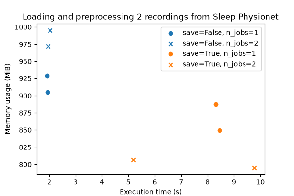

Note
Go to the end to download the full example code.
Benchmarking preprocessing with parallelization and serialization#
In this example, we compare the execution time and memory requirements of
preprocessing data with the parallelization and serialization functionalities
available in braindecode.preprocessing.preprocess().
We compare 4 cases:
Sequential, no serialization
Sequential, with serialization
Parallel, no serialization
Parallel, with serialization
Case 1 is the simplest approach, in which all recordings in a
braindecode.datasets.BaseConcatDataset are preprocessed one after the
other. In this scenario, braindecode.preprocessing.preprocess() acts
inplace, which means memory usage will likely stay stable (depending on the
preprocessing operations) if recordings have been preloaded. However, two
potential issues arise when working with large datasets: (1) if recordings have
not been preloaded before preprocessing, preprocess() will need to load them
and keep them in memory, in which case memory can become a bottleneck, and (2)
sequential preprocessing can take a considerable amount of time to run when
working with many recordings.
A solution to the first issue (memory usage) is to save the preprocessed data
to a file so it can be cleared from memory before moving on to the next
recording (case 2). The recordings can then be reloaded with preload=False
once they have all been saved to disk. This enables using the lazy loading
capabilities of braindecode.datasets.BaseConcatDataset and avoids
potential memory bottlenecks. The downside is that the writing to disk can take
some time and of course requires disk space.
A solution to the second issue (slow preprocessing) is to parallelize the preprocessing over multiple cores whenever possible (case 3). This can speed up preprocessing significantly. However, this approach will increase memory usage because of the way parallelization is implemented internally (with joblib, copies of (part of) the data must be made when sending arguments to parallel processes).
Finally, case 4 (combining parallelization and serialization) is likely to be both fast and memory efficient. As shown in this example, this remains a tradeoff though, and the selected configuration should depend on the size of the dataset and the specific operations applied to the recordings.
# Authors: Hubert Banville <hubert.jbanville@gmail.com>
# Bruno Aristimunha <b.aristimunha@gmail.com>
#
# License: BSD (3-clause)
import gc
import json
import subprocess
import sys
import tempfile
import textwrap
from itertools import product
import matplotlib.pyplot as plt
import pandas as pd
from sklearn.preprocessing import scale
from braindecode.datasets import SleepPhysionet
from braindecode.preprocessing import (
Preprocessor,
create_fixed_length_windows,
preprocess,
)
We create a function that goes through the usual three steps of data
preparation: (1) data loading, (2) continuous data preprocessing,
(3) windowing and (4) windowed data preprocessing. We use the
braindecode.datasets.SleepPhysionet dataset for testing purposes.
def prepare_data(n_recs, save, preload, n_jobs):
tmp_dir = tempfile.TemporaryDirectory() if save else None
save_dir = tmp_dir.name if tmp_dir is not None else None
try:
# (1) Load the data
concat_ds = SleepPhysionet(
subject_ids=range(n_recs),
recording_ids=[1],
crop_wake_mins=30,
preload=preload,
)
sfreq = concat_ds.datasets[0].raw.info["sfreq"]
# (2) Preprocess the continuous data
preprocessors = [
Preprocessor("crop", tmin=10),
Preprocessor("filter", l_freq=None, h_freq=30),
]
preprocess(
concat_ds, preprocessors, save_dir=save_dir, overwrite=True, n_jobs=n_jobs
)
# (3) Window the data
windows_ds = create_fixed_length_windows(
concat_ds,
0,
None,
int(30 * sfreq),
int(30 * sfreq),
on_last_window="drop",
preload=preload,
n_jobs=n_jobs,
)
# (4) Preprocess the windowed data
preprocessors = [Preprocessor(scale, channel_wise=True)]
preprocess(
windows_ds, preprocessors, save_dir=save_dir, overwrite=True, n_jobs=n_jobs
)
finally:
if tmp_dir is not None:
tmp_dir.cleanup()
Next, we measure run time and peak memory overhead for each of the 4 cases
above inside an isolated Python subprocess. Running each configuration in its
own subprocess works cleanly across Linux, macOS spawn, Windows, and
parallel Sphinx-Gallery workers (where multiprocessing-based profilers
fail inside daemonic worker processes), while warming joblib’s worker pool
once per configuration separates preprocessing cost from one-time Python
import startup.
Note
To better characterize the run time vs. memory usage tradeoff for your specific configuration (as this will differ based on available hardware, data size and preprocessing operations), we recommend adapting this example to your use case and running it on your machine.
_CHILD_SCRIPT = textwrap.dedent(
"""
import gc
import json
import resource
import sys
import tempfile
import threading
import time
import numpy as np
from joblib import Parallel, delayed
from sklearn.preprocessing import scale
from braindecode.datasets import SleepPhysionet
from braindecode.preprocessing import (
Preprocessor,
create_fixed_length_windows,
exponential_moving_demean,
preprocess,
)
try:
import psutil
except ImportError:
psutil = None
n_recs = int(sys.argv[1])
n_jobs = int(sys.argv[2])
n_repets = int(sys.argv[3])
def _tree_rss_mib():
if psutil is not None:
proc = psutil.Process()
rss = proc.memory_info().rss
for child in proc.children(recursive=True):
try:
rss += child.memory_info().rss
except psutil.Error:
pass
return rss / (1024 ** 2)
ru_self = resource.getrusage(resource.RUSAGE_SELF).ru_maxrss
ru_child = resource.getrusage(resource.RUSAGE_CHILDREN).ru_maxrss
scale_factor = 1024 ** 2 if sys.platform == "darwin" else 1024
return (ru_self + ru_child) / scale_factor
def _run_once(save):
tmp_dir = tempfile.TemporaryDirectory() if save else None
save_dir = tmp_dir.name if tmp_dir is not None else None
try:
concat_ds = SleepPhysionet(
subject_ids=list(range(n_recs)),
recording_ids=[1],
crop_wake_mins=30,
preload=False,
)
sfreq = concat_ds.datasets[0].raw.info["sfreq"]
preprocess(
concat_ds,
[
Preprocessor("crop", tmin=10),
Preprocessor("filter", l_freq=None, h_freq=30),
],
save_dir=save_dir,
overwrite=True,
n_jobs=n_jobs,
)
windows_ds = create_fixed_length_windows(
concat_ds,
0,
None,
int(30 * sfreq),
int(30 * sfreq),
on_last_window="drop",
preload=False,
n_jobs=n_jobs,
)
preprocess(
windows_ds,
[Preprocessor(scale, channel_wise=True)],
save_dir=save_dir,
overwrite=True,
n_jobs=n_jobs,
)
finally:
if tmp_dir is not None:
tmp_dir.cleanup()
if n_jobs > 1:
# Import braindecode inside workers before recording baseline RSS/time.
Parallel(n_jobs=n_jobs)(
delayed(exponential_moving_demean)(np.zeros((1, 2)))
for _ in range(n_jobs)
)
gc.collect()
idle_mib = _tree_rss_mib()
out = []
# Run serialized (lower-memory) mode before in-memory mode so OS allocator
# high-water marks do not mask the smaller footprint of save=True.
for save in (True, False):
for _ in range(n_repets):
gc.collect()
peak = [_tree_rss_mib()]
stop_evt = threading.Event()
def _sampler(peak_ref=peak, evt=stop_evt):
while not evt.wait(0.015):
cur = _tree_rss_mib()
if cur > peak_ref[0]:
peak_ref[0] = cur
t_sampler = threading.Thread(target=_sampler, daemon=True)
t_sampler.start()
t0 = time.perf_counter()
try:
_run_once(save)
finally:
elapsed = time.perf_counter() - t0
stop_evt.set()
t_sampler.join()
peak_mib = max(peak[0], _tree_rss_mib())
out.append(
{
"save": save,
"time": elapsed,
"max_mem": max(0.0, peak_mib - idle_mib),
}
)
print("__BENCHMARK_JSON__" + json.dumps(out))
"""
)
n_repets = 2 # Number of repetitions
all_n_recs = 2 # Number of recordings to load and preprocess
all_n_jobs = [1, 2] # Number of parallel processes
# Ensure the SleepPhysionet files are cached once before timing subprocesses.
_ = SleepPhysionet(
subject_ids=list(range(all_n_recs)),
recording_ids=[1],
crop_wake_mins=30,
preload=False,
)
gc.collect()
results = []
for n_recs, n_jobs in product([all_n_recs], all_n_jobs):
completed = subprocess.run(
[
sys.executable,
"-c",
_CHILD_SCRIPT,
str(n_recs),
str(n_jobs),
str(n_repets),
],
check=True,
capture_output=True,
text=True,
)
marker_line = next(
line
for line in completed.stdout.splitlines()
if line.startswith("__BENCHMARK_JSON__")
)
for run in json.loads(marker_line.removeprefix("__BENCHMARK_JSON__")):
results.append(
{
"n_recs": n_recs,
"max_mem": run["max_mem"],
"save": run["save"],
"n_jobs": n_jobs,
"time": run["time"],
}
)
0%| | 0.00/48.3M [00:00<?, ?B/s]
0%| | 66.6k/48.3M [00:00<02:48, 287kB/s]
0%|▏ | 181k/48.3M [00:00<01:20, 597kB/s]
1%|▏ | 256k/48.3M [00:00<01:32, 518kB/s]
1%|▎ | 329k/48.3M [00:00<01:30, 528kB/s]
1%|▎ | 387k/48.3M [00:00<01:29, 537kB/s]
1%|▎ | 444k/48.3M [00:00<01:58, 403kB/s]
1%|▍ | 492k/48.3M [00:01<01:58, 405kB/s]
1%|▍ | 537k/48.3M [00:01<02:07, 374kB/s]
1%|▍ | 578k/48.3M [00:01<02:11, 365kB/s]
1%|▌ | 624k/48.3M [00:01<02:07, 374kB/s]
1%|▌ | 689k/48.3M [00:01<01:55, 413kB/s]
2%|▌ | 755k/48.3M [00:01<01:45, 451kB/s]
2%|▋ | 804k/48.3M [00:01<01:44, 455kB/s]
2%|▋ | 853k/48.3M [00:01<01:47, 444kB/s]
2%|▋ | 902k/48.3M [00:02<01:54, 413kB/s]
2%|▊ | 968k/48.3M [00:02<01:48, 438kB/s]
2%|▊ | 1.02M/48.3M [00:02<01:50, 429kB/s]
2%|▊ | 1.08M/48.3M [00:02<01:44, 451kB/s]
2%|▉ | 1.16M/48.3M [00:02<01:31, 515kB/s]
3%|▉ | 1.22M/48.3M [00:02<01:44, 450kB/s]
3%|█ | 1.28M/48.3M [00:02<01:39, 471kB/s]
3%|█ | 1.33M/48.3M [00:03<01:46, 443kB/s]
3%|█ | 1.38M/48.3M [00:03<01:48, 434kB/s]
3%|█ | 1.43M/48.3M [00:03<01:51, 422kB/s]
3%|█▏ | 1.48M/48.3M [00:03<01:53, 412kB/s]
3%|█▏ | 1.52M/48.3M [00:03<01:50, 424kB/s]
3%|█▏ | 1.57M/48.3M [00:03<01:51, 419kB/s]
3%|█▎ | 1.62M/48.3M [00:03<01:48, 431kB/s]
3%|█▎ | 1.69M/48.3M [00:03<01:39, 471kB/s]
4%|█▍ | 1.75M/48.3M [00:03<01:34, 492kB/s]
4%|█▍ | 1.80M/48.3M [00:04<01:40, 464kB/s]
4%|█▍ | 1.89M/48.3M [00:04<01:31, 510kB/s]
4%|█▌ | 1.94M/48.3M [00:04<01:34, 493kB/s]
4%|█▌ | 1.99M/48.3M [00:04<01:39, 464kB/s]
4%|█▌ | 2.03M/48.3M [00:04<01:50, 417kB/s]
4%|█▋ | 2.08M/48.3M [00:04<01:50, 420kB/s]
4%|█▋ | 2.13M/48.3M [00:04<01:48, 425kB/s]
5%|█▋ | 2.18M/48.3M [00:04<01:45, 440kB/s]
5%|█▊ | 2.25M/48.3M [00:05<01:40, 461kB/s]
5%|█▊ | 2.29M/48.3M [00:05<01:39, 464kB/s]
5%|█▊ | 2.34M/48.3M [00:05<01:49, 420kB/s]
5%|█▉ | 2.39M/48.3M [00:05<01:51, 410kB/s]
5%|█▉ | 2.44M/48.3M [00:05<01:49, 419kB/s]
5%|█▉ | 2.51M/48.3M [00:05<01:40, 458kB/s]
5%|██ | 2.57M/48.3M [00:05<01:34, 483kB/s]
5%|██ | 2.62M/48.3M [00:05<01:36, 476kB/s]
6%|██ | 2.67M/48.3M [00:05<01:36, 475kB/s]
6%|██▏ | 2.72M/48.3M [00:06<01:36, 472kB/s]
6%|██▏ | 2.77M/48.3M [00:06<01:35, 477kB/s]
6%|██▏ | 2.84M/48.3M [00:06<01:33, 484kB/s]
6%|██▎ | 2.90M/48.3M [00:06<01:29, 506kB/s]
6%|██▎ | 2.95M/48.3M [00:06<01:30, 503kB/s]
6%|██▎ | 3.00M/48.3M [00:06<01:35, 477kB/s]
6%|██▍ | 3.05M/48.3M [00:06<01:44, 433kB/s]
6%|██▍ | 3.10M/48.3M [00:06<01:43, 435kB/s]
6%|██▍ | 3.14M/48.3M [00:07<01:54, 394kB/s]
7%|██▌ | 3.18M/48.3M [00:07<01:56, 389kB/s]
7%|██▌ | 3.23M/48.3M [00:07<01:57, 386kB/s]
7%|██▌ | 3.28M/48.3M [00:07<01:54, 395kB/s]
7%|██▌ | 3.33M/48.3M [00:07<01:51, 403kB/s]
7%|██▋ | 3.38M/48.3M [00:07<01:54, 391kB/s]
7%|██▋ | 3.44M/48.3M [00:07<01:45, 427kB/s]
7%|██▊ | 3.51M/48.3M [00:07<01:38, 457kB/s]
7%|██▊ | 3.56M/48.3M [00:08<01:38, 454kB/s]
7%|██▊ | 3.62M/48.3M [00:08<01:37, 460kB/s]
8%|██▉ | 3.69M/48.3M [00:08<01:35, 467kB/s]
8%|██▉ | 3.75M/48.3M [00:08<01:33, 476kB/s]
8%|███ | 3.82M/48.3M [00:08<01:30, 492kB/s]
8%|███ | 3.88M/48.3M [00:08<01:25, 517kB/s]
8%|███ | 3.95M/48.3M [00:08<01:26, 516kB/s]
8%|███▏ | 4.00M/48.3M [00:08<01:27, 509kB/s]
8%|███▏ | 4.05M/48.3M [00:09<01:33, 473kB/s]
8%|███▏ | 4.10M/48.3M [00:09<01:48, 407kB/s]
9%|███▎ | 4.15M/48.3M [00:09<01:50, 401kB/s]
9%|███▎ | 4.20M/48.3M [00:09<01:45, 418kB/s]
9%|███▎ | 4.24M/48.3M [00:09<01:42, 430kB/s]
9%|███▍ | 4.29M/48.3M [00:09<01:38, 445kB/s]
9%|███▍ | 4.36M/48.3M [00:09<01:29, 490kB/s]
9%|███▍ | 4.42M/48.3M [00:09<01:22, 534kB/s]
9%|███▌ | 4.48M/48.3M [00:09<01:21, 536kB/s]
9%|███▌ | 4.54M/48.3M [00:10<01:20, 546kB/s]
10%|███▌ | 4.60M/48.3M [00:10<01:20, 540kB/s]
10%|███▋ | 4.67M/48.3M [00:10<01:22, 531kB/s]
10%|███▋ | 4.72M/48.3M [00:10<01:28, 494kB/s]
10%|███▊ | 4.79M/48.3M [00:10<01:29, 487kB/s]
10%|███▊ | 4.83M/48.3M [00:10<01:39, 438kB/s]
10%|███▊ | 4.88M/48.3M [00:10<01:44, 418kB/s]
10%|███▊ | 4.93M/48.3M [00:10<01:53, 383kB/s]
10%|███▉ | 4.97M/48.3M [00:11<01:54, 380kB/s]
10%|███▉ | 5.01M/48.3M [00:11<01:51, 388kB/s]
10%|███▉ | 5.06M/48.3M [00:11<02:01, 356kB/s]
11%|████ | 5.11M/48.3M [00:11<01:54, 377kB/s]
11%|████ | 5.16M/48.3M [00:11<01:54, 379kB/s]
11%|████ | 5.21M/48.3M [00:11<01:46, 406kB/s]
11%|████▏ | 5.26M/48.3M [00:11<01:49, 393kB/s]
11%|████▏ | 5.33M/48.3M [00:11<01:38, 437kB/s]
11%|████▏ | 5.39M/48.3M [00:12<01:31, 471kB/s]
11%|████▎ | 5.46M/48.3M [00:12<01:23, 512kB/s]
11%|████▎ | 5.52M/48.3M [00:12<01:20, 535kB/s]
12%|████▍ | 5.58M/48.3M [00:12<01:30, 470kB/s]
12%|████▍ | 5.65M/48.3M [00:12<01:21, 522kB/s]
12%|████▍ | 5.71M/48.3M [00:12<01:24, 503kB/s]
12%|████▌ | 5.76M/48.3M [00:12<01:32, 460kB/s]
12%|████▌ | 5.81M/48.3M [00:12<01:43, 409kB/s]
12%|████▌ | 5.88M/48.3M [00:13<01:29, 475kB/s]
12%|████▋ | 5.93M/48.3M [00:13<01:33, 455kB/s]
12%|████▋ | 6.00M/48.3M [00:13<01:25, 493kB/s]
13%|████▊ | 6.06M/48.3M [00:13<01:19, 530kB/s]
13%|████▊ | 6.13M/48.3M [00:13<01:15, 557kB/s]
13%|████▉ | 6.21M/48.3M [00:13<01:09, 608kB/s]
13%|████▉ | 6.29M/48.3M [00:13<01:03, 659kB/s]
13%|█████ | 6.37M/48.3M [00:13<01:00, 699kB/s]
13%|█████ | 6.47M/48.3M [00:13<00:55, 751kB/s]
14%|█████▏ | 6.57M/48.3M [00:14<00:52, 792kB/s]
14%|█████▏ | 6.67M/48.3M [00:14<00:50, 829kB/s]
14%|█████▎ | 6.78M/48.3M [00:14<00:46, 891kB/s]
14%|█████▍ | 6.90M/48.3M [00:14<00:43, 949kB/s]
15%|█████▌ | 7.01M/48.3M [00:14<00:42, 972kB/s]
15%|█████▍ | 7.14M/48.3M [00:14<00:40, 1.03MB/s]
15%|█████▋ | 7.25M/48.3M [00:14<00:41, 981kB/s]
15%|█████▊ | 7.35M/48.3M [00:14<00:48, 852kB/s]
15%|█████▊ | 7.43M/48.3M [00:15<00:55, 741kB/s]
16%|█████▉ | 7.51M/48.3M [00:15<01:03, 644kB/s]
16%|█████▉ | 7.58M/48.3M [00:15<01:09, 585kB/s]
16%|██████ | 7.64M/48.3M [00:15<01:15, 541kB/s]
16%|██████ | 7.70M/48.3M [00:15<01:17, 524kB/s]
16%|██████ | 7.75M/48.3M [00:15<01:28, 459kB/s]
16%|██████▏ | 7.80M/48.3M [00:15<01:33, 436kB/s]
16%|██████▏ | 7.85M/48.3M [00:16<01:34, 428kB/s]
16%|██████▏ | 7.90M/48.3M [00:16<01:33, 431kB/s]
16%|██████▏ | 7.94M/48.3M [00:16<01:34, 428kB/s]
17%|██████▎ | 8.00M/48.3M [00:16<01:36, 419kB/s]
17%|██████▎ | 8.05M/48.3M [00:16<01:35, 420kB/s]
17%|██████▍ | 8.11M/48.3M [00:16<01:29, 448kB/s]
17%|██████▍ | 8.18M/48.3M [00:16<01:24, 473kB/s]
17%|██████▍ | 8.23M/48.3M [00:16<01:32, 435kB/s]
17%|██████▌ | 8.27M/48.3M [00:17<01:36, 416kB/s]
17%|██████▌ | 8.32M/48.3M [00:17<01:41, 393kB/s]
17%|██████▌ | 8.37M/48.3M [00:17<01:42, 391kB/s]
17%|██████▌ | 8.42M/48.3M [00:17<01:38, 405kB/s]
18%|██████▋ | 8.47M/48.3M [00:17<01:34, 422kB/s]
18%|██████▋ | 8.54M/48.3M [00:17<01:25, 468kB/s]
18%|██████▊ | 8.60M/48.3M [00:17<01:17, 512kB/s]
18%|██████▊ | 8.68M/48.3M [00:17<01:08, 579kB/s]
18%|██████▊ | 8.74M/48.3M [00:18<01:24, 468kB/s]
18%|██████▉ | 8.82M/48.3M [00:18<01:23, 472kB/s]
18%|██████▉ | 8.88M/48.3M [00:18<01:21, 482kB/s]
19%|███████ | 8.95M/48.3M [00:18<01:15, 521kB/s]
19%|███████ | 9.01M/48.3M [00:18<01:12, 544kB/s]
19%|███████▏ | 9.07M/48.3M [00:18<01:18, 499kB/s]
19%|███████▏ | 9.14M/48.3M [00:18<01:11, 547kB/s]
19%|███████▏ | 9.20M/48.3M [00:18<01:12, 543kB/s]
19%|███████▎ | 9.26M/48.3M [00:18<01:15, 520kB/s]
19%|███████▎ | 9.34M/48.3M [00:19<01:08, 567kB/s]
19%|███████▍ | 9.41M/48.3M [00:19<01:10, 549kB/s]
20%|███████▍ | 9.46M/48.3M [00:19<01:16, 508kB/s]
20%|███████▍ | 9.54M/48.3M [00:19<01:10, 553kB/s]
20%|███████▌ | 9.60M/48.3M [00:19<01:10, 547kB/s]
20%|███████▌ | 9.67M/48.3M [00:19<01:11, 540kB/s]
20%|███████▋ | 9.73M/48.3M [00:19<01:11, 537kB/s]
20%|███████▋ | 9.79M/48.3M [00:20<01:19, 484kB/s]
20%|███████▊ | 9.86M/48.3M [00:20<01:13, 527kB/s]
21%|███████▊ | 9.93M/48.3M [00:20<01:11, 536kB/s]
21%|███████▊ | 10.0M/48.3M [00:20<01:12, 530kB/s]
21%|███████▉ | 10.1M/48.3M [00:20<01:10, 540kB/s]
21%|███████▉ | 10.1M/48.3M [00:20<01:06, 579kB/s]
21%|████████ | 10.2M/48.3M [00:20<01:07, 567kB/s]
21%|████████ | 10.3M/48.3M [00:20<01:05, 578kB/s]
21%|████████▏ | 10.3M/48.3M [00:20<01:04, 585kB/s]
22%|████████▏ | 10.4M/48.3M [00:21<01:03, 599kB/s]
22%|████████▏ | 10.5M/48.3M [00:21<01:00, 624kB/s]
22%|████████▎ | 10.6M/48.3M [00:21<00:56, 668kB/s]
22%|████████▍ | 10.7M/48.3M [00:21<00:51, 728kB/s]
22%|████████▍ | 10.8M/48.3M [00:21<00:47, 785kB/s]
22%|████████▌ | 10.9M/48.3M [00:21<00:45, 817kB/s]
23%|████████▋ | 11.0M/48.3M [00:21<00:42, 882kB/s]
23%|████████▋ | 11.1M/48.3M [00:21<00:39, 947kB/s]
23%|████████▌ | 11.2M/48.3M [00:21<00:36, 1.02MB/s]
23%|████████▋ | 11.3M/48.3M [00:22<00:35, 1.06MB/s]
24%|████████▊ | 11.5M/48.3M [00:22<00:33, 1.11MB/s]
24%|████████▉ | 11.6M/48.3M [00:22<00:31, 1.18MB/s]
24%|████████▉ | 11.7M/48.3M [00:22<00:30, 1.19MB/s]
25%|█████████ | 11.9M/48.3M [00:22<00:28, 1.26MB/s]
25%|█████████▏ | 12.0M/48.3M [00:22<00:28, 1.26MB/s]
25%|█████████▎ | 12.1M/48.3M [00:22<00:28, 1.25MB/s]
25%|█████████▍ | 12.3M/48.3M [00:22<00:32, 1.12MB/s]
26%|█████████▍ | 12.4M/48.3M [00:22<00:35, 1.02MB/s]
26%|█████████▌ | 12.6M/48.3M [00:23<00:31, 1.14MB/s]
26%|█████████▋ | 12.7M/48.3M [00:23<00:33, 1.08MB/s]
26%|█████████▊ | 12.8M/48.3M [00:23<00:34, 1.04MB/s]
27%|██████████▏ | 12.9M/48.3M [00:23<00:36, 974kB/s]
27%|██████████▏ | 13.0M/48.3M [00:23<00:38, 918kB/s]
27%|██████████▎ | 13.1M/48.3M [00:23<00:37, 930kB/s]
27%|██████████▎ | 13.2M/48.3M [00:23<00:37, 930kB/s]
28%|██████████▍ | 13.3M/48.3M [00:23<00:36, 969kB/s]
28%|██████████▎ | 13.4M/48.3M [00:23<00:34, 1.01MB/s]
28%|██████████▎ | 13.6M/48.3M [00:24<00:32, 1.08MB/s]
28%|██████████▍ | 13.7M/48.3M [00:24<00:31, 1.11MB/s]
29%|██████████▌ | 13.8M/48.3M [00:24<00:30, 1.14MB/s]
29%|██████████▋ | 13.9M/48.3M [00:24<00:31, 1.09MB/s]
29%|██████████▊ | 14.1M/48.3M [00:24<00:30, 1.14MB/s]
29%|██████████▊ | 14.2M/48.3M [00:24<00:30, 1.12MB/s]
30%|██████████▉ | 14.3M/48.3M [00:24<00:31, 1.10MB/s]
30%|███████████ | 14.4M/48.3M [00:24<00:32, 1.03MB/s]
30%|███████████▍ | 14.5M/48.3M [00:25<00:36, 917kB/s]
30%|███████████▍ | 14.6M/48.3M [00:25<00:37, 906kB/s]
30%|███████████▌ | 14.7M/48.3M [00:25<00:45, 736kB/s]
31%|███████████▌ | 14.8M/48.3M [00:25<00:44, 749kB/s]
31%|███████████▋ | 14.8M/48.3M [00:25<00:46, 718kB/s]
31%|███████████▋ | 14.9M/48.3M [00:25<00:47, 700kB/s]
31%|███████████▊ | 15.0M/48.3M [00:25<00:46, 709kB/s]
31%|███████████▊ | 15.1M/48.3M [00:25<00:47, 703kB/s]
31%|███████████▉ | 15.2M/48.3M [00:25<00:47, 700kB/s]
32%|███████████▉ | 15.2M/48.3M [00:26<00:48, 688kB/s]
32%|████████████ | 15.3M/48.3M [00:26<00:48, 678kB/s]
32%|████████████ | 15.4M/48.3M [00:26<00:48, 675kB/s]
32%|████████████▏ | 15.5M/48.3M [00:26<00:48, 681kB/s]
32%|████████████▏ | 15.5M/48.3M [00:26<00:54, 599kB/s]
32%|████████████▎ | 15.6M/48.3M [00:26<00:50, 645kB/s]
32%|████████████▎ | 15.7M/48.3M [00:26<00:50, 645kB/s]
33%|████████████▍ | 15.8M/48.3M [00:26<00:50, 639kB/s]
33%|████████████▍ | 15.8M/48.3M [00:27<00:51, 633kB/s]
33%|████████████▍ | 15.9M/48.3M [00:27<00:53, 605kB/s]
33%|████████████▌ | 16.0M/48.3M [00:27<00:54, 590kB/s]
33%|████████████▌ | 16.0M/48.3M [00:27<00:57, 565kB/s]
33%|████████████▋ | 16.1M/48.3M [00:27<00:57, 556kB/s]
33%|████████████▋ | 16.1M/48.3M [00:27<00:56, 571kB/s]
34%|████████████▋ | 16.2M/48.3M [00:27<00:58, 550kB/s]
34%|████████████▊ | 16.3M/48.3M [00:27<01:00, 532kB/s]
34%|████████████▊ | 16.3M/48.3M [00:27<00:58, 548kB/s]
34%|████████████▉ | 16.4M/48.3M [00:28<00:57, 555kB/s]
34%|████████████▉ | 16.5M/48.3M [00:28<00:57, 554kB/s]
34%|█████████████ | 16.5M/48.3M [00:28<00:53, 594kB/s]
34%|█████████████ | 16.6M/48.3M [00:28<00:52, 605kB/s]
35%|█████████████ | 16.7M/48.3M [00:28<00:52, 608kB/s]
35%|█████████████▏ | 16.7M/48.3M [00:28<00:51, 615kB/s]
35%|█████████████▏ | 16.8M/48.3M [00:28<00:56, 563kB/s]
35%|█████████████▎ | 16.9M/48.3M [00:28<00:55, 563kB/s]
35%|█████████████▎ | 16.9M/48.3M [00:29<01:04, 488kB/s]
35%|█████████████▎ | 17.0M/48.3M [00:29<01:06, 473kB/s]
35%|█████████████▍ | 17.0M/48.3M [00:29<01:07, 463kB/s]
35%|█████████████▍ | 17.1M/48.3M [00:29<01:12, 429kB/s]
35%|█████████████▍ | 17.1M/48.3M [00:29<01:12, 431kB/s]
36%|█████████████▍ | 17.2M/48.3M [00:29<01:11, 437kB/s]
36%|█████████████▌ | 17.2M/48.3M [00:29<01:08, 451kB/s]
36%|█████████████▌ | 17.3M/48.3M [00:29<01:06, 470kB/s]
36%|█████████████▋ | 17.4M/48.3M [00:29<01:00, 509kB/s]
36%|█████████████▋ | 17.4M/48.3M [00:30<01:02, 497kB/s]
36%|█████████████▋ | 17.5M/48.3M [00:30<01:06, 467kB/s]
36%|█████████████▊ | 17.5M/48.3M [00:30<01:04, 478kB/s]
36%|█████████████▊ | 17.6M/48.3M [00:30<01:01, 503kB/s]
37%|█████████████▉ | 17.7M/48.3M [00:30<00:59, 516kB/s]
37%|█████████████▉ | 17.7M/48.3M [00:30<00:55, 551kB/s]
37%|█████████████▉ | 17.8M/48.3M [00:30<00:54, 564kB/s]
37%|██████████████ | 17.9M/48.3M [00:30<00:54, 562kB/s]
37%|██████████████ | 17.9M/48.3M [00:31<00:49, 617kB/s]
37%|██████████████▏ | 18.0M/48.3M [00:31<00:54, 556kB/s]
37%|██████████████▏ | 18.1M/48.3M [00:31<00:46, 648kB/s]
38%|██████████████▎ | 18.2M/48.3M [00:31<00:46, 651kB/s]
38%|██████████████▎ | 18.2M/48.3M [00:31<00:46, 653kB/s]
38%|██████████████▍ | 18.3M/48.3M [00:31<00:46, 641kB/s]
38%|██████████████▍ | 18.4M/48.3M [00:31<00:45, 662kB/s]
38%|██████████████▍ | 18.4M/48.3M [00:31<00:47, 623kB/s]
38%|██████████████▌ | 18.5M/48.3M [00:31<00:48, 618kB/s]
38%|██████████████▌ | 18.6M/48.3M [00:32<00:48, 615kB/s]
39%|██████████████▋ | 18.6M/48.3M [00:32<00:52, 569kB/s]
39%|██████████████▋ | 18.7M/48.3M [00:32<00:48, 605kB/s]
39%|██████████████▊ | 18.8M/48.3M [00:32<00:49, 601kB/s]
39%|██████████████▊ | 18.9M/48.3M [00:32<00:46, 628kB/s]
39%|██████████████▉ | 19.0M/48.3M [00:32<00:44, 655kB/s]
39%|██████████████▉ | 19.0M/48.3M [00:32<00:43, 666kB/s]
40%|███████████████ | 19.1M/48.3M [00:32<00:49, 588kB/s]
40%|███████████████ | 19.2M/48.3M [00:33<00:52, 558kB/s]
40%|███████████████ | 19.2M/48.3M [00:33<00:57, 509kB/s]
40%|███████████████▏ | 19.3M/48.3M [00:33<00:58, 499kB/s]
40%|███████████████▏ | 19.3M/48.3M [00:33<00:59, 486kB/s]
40%|███████████████▏ | 19.4M/48.3M [00:33<01:00, 477kB/s]
40%|███████████████▎ | 19.4M/48.3M [00:33<00:59, 484kB/s]
40%|███████████████▎ | 19.5M/48.3M [00:33<00:53, 539kB/s]
41%|███████████████▍ | 19.6M/48.3M [00:33<00:48, 597kB/s]
41%|███████████████▍ | 19.7M/48.3M [00:33<00:45, 635kB/s]
41%|███████████████▌ | 19.8M/48.3M [00:34<00:44, 649kB/s]
41%|███████████████▌ | 19.8M/48.3M [00:34<00:43, 657kB/s]
41%|███████████████▋ | 19.9M/48.3M [00:34<00:48, 586kB/s]
41%|███████████████▋ | 20.0M/48.3M [00:34<00:44, 642kB/s]
42%|███████████████▊ | 20.1M/48.3M [00:34<00:46, 603kB/s]
42%|███████████████▊ | 20.1M/48.3M [00:34<00:47, 588kB/s]
42%|███████████████▊ | 20.2M/48.3M [00:34<00:56, 496kB/s]
42%|███████████████▉ | 20.2M/48.3M [00:34<00:56, 493kB/s]
42%|███████████████▉ | 20.3M/48.3M [00:35<00:56, 496kB/s]
42%|███████████████▉ | 20.3M/48.3M [00:35<00:57, 483kB/s]
42%|████████████████ | 20.4M/48.3M [00:35<00:58, 480kB/s]
42%|████████████████ | 20.5M/48.3M [00:35<01:02, 446kB/s]
43%|████████████████▏ | 20.5M/48.3M [00:35<00:54, 511kB/s]
43%|████████████████▏ | 20.6M/48.3M [00:35<00:54, 512kB/s]
43%|████████████████▏ | 20.7M/48.3M [00:35<00:53, 518kB/s]
43%|████████████████▎ | 20.7M/48.3M [00:35<00:52, 530kB/s]
43%|████████████████▎ | 20.8M/48.3M [00:36<00:50, 541kB/s]
43%|████████████████▍ | 20.9M/48.3M [00:36<00:48, 568kB/s]
43%|████████████████▍ | 20.9M/48.3M [00:36<00:47, 581kB/s]
43%|████████████████▌ | 21.0M/48.3M [00:36<00:49, 550kB/s]
44%|████████████████▌ | 21.1M/48.3M [00:36<00:49, 552kB/s]
44%|████████████████▌ | 21.1M/48.3M [00:36<00:49, 550kB/s]
44%|████████████████▋ | 21.2M/48.3M [00:36<00:46, 586kB/s]
44%|████████████████▋ | 21.3M/48.3M [00:36<00:46, 578kB/s]
44%|████████████████▊ | 21.3M/48.3M [00:36<00:45, 589kB/s]
44%|████████████████▊ | 21.4M/48.3M [00:37<00:48, 559kB/s]
44%|████████████████▊ | 21.5M/48.3M [00:37<00:48, 558kB/s]
45%|████████████████▉ | 21.5M/48.3M [00:37<00:45, 584kB/s]
45%|████████████████▉ | 21.6M/48.3M [00:37<00:46, 572kB/s]
45%|█████████████████ | 21.7M/48.3M [00:37<00:47, 561kB/s]
45%|█████████████████ | 21.7M/48.3M [00:37<00:44, 593kB/s]
45%|█████████████████▏ | 21.8M/48.3M [00:37<00:45, 579kB/s]
45%|█████████████████▏ | 21.9M/48.3M [00:37<00:45, 588kB/s]
45%|█████████████████▏ | 21.9M/48.3M [00:38<00:45, 582kB/s]
46%|█████████████████▎ | 22.0M/48.3M [00:38<00:45, 578kB/s]
46%|█████████████████▎ | 22.1M/48.3M [00:38<00:47, 558kB/s]
46%|█████████████████▍ | 22.1M/48.3M [00:38<00:46, 562kB/s]
46%|█████████████████▍ | 22.2M/48.3M [00:38<00:44, 582kB/s]
46%|█████████████████▌ | 22.3M/48.3M [00:38<00:41, 622kB/s]
46%|█████████████████▌ | 22.4M/48.3M [00:38<00:39, 666kB/s]
46%|█████████████████▋ | 22.4M/48.3M [00:38<00:36, 708kB/s]
47%|█████████████████▋ | 22.5M/48.3M [00:38<00:33, 759kB/s]
47%|█████████████████▊ | 22.6M/48.3M [00:39<00:33, 764kB/s]
47%|█████████████████▊ | 22.7M/48.3M [00:39<00:38, 658kB/s]
47%|█████████████████▉ | 22.8M/48.3M [00:39<00:34, 732kB/s]
47%|█████████████████▉ | 22.9M/48.3M [00:39<00:34, 735kB/s]
47%|██████████████████ | 23.0M/48.3M [00:39<00:35, 723kB/s]
48%|██████████████████ | 23.0M/48.3M [00:39<00:36, 691kB/s]
48%|██████████████████▏ | 23.1M/48.3M [00:39<00:36, 700kB/s]
48%|██████████████████▏ | 23.2M/48.3M [00:39<00:34, 731kB/s]
48%|██████████████████▎ | 23.3M/48.3M [00:39<00:34, 716kB/s]
48%|██████████████████▎ | 23.4M/48.3M [00:40<00:34, 725kB/s]
49%|██████████████████▍ | 23.4M/48.3M [00:40<00:33, 747kB/s]
49%|██████████████████▍ | 23.5M/48.3M [00:40<00:32, 760kB/s]
49%|██████████████████▌ | 23.6M/48.3M [00:40<00:30, 809kB/s]
49%|██████████████████▋ | 23.7M/48.3M [00:40<00:31, 786kB/s]
49%|██████████████████▋ | 23.8M/48.3M [00:40<00:31, 776kB/s]
49%|██████████████████▊ | 23.9M/48.3M [00:40<00:31, 765kB/s]
50%|██████████████████▊ | 24.0M/48.3M [00:40<00:33, 738kB/s]
50%|██████████████████▉ | 24.0M/48.3M [00:40<00:33, 716kB/s]
50%|██████████████████▉ | 24.1M/48.3M [00:41<00:34, 703kB/s]
50%|███████████████████ | 24.2M/48.3M [00:41<00:34, 702kB/s]
50%|███████████████████ | 24.3M/48.3M [00:41<00:35, 673kB/s]
50%|███████████████████▏ | 24.3M/48.3M [00:41<00:35, 684kB/s]
51%|███████████████████▏ | 24.4M/48.3M [00:41<00:33, 720kB/s]
51%|███████████████████▎ | 24.5M/48.3M [00:41<00:33, 722kB/s]
51%|███████████████████▎ | 24.6M/48.3M [00:41<00:34, 681kB/s]
51%|███████████████████▎ | 24.6M/48.3M [00:41<00:34, 691kB/s]
51%|███████████████████▍ | 24.7M/48.3M [00:41<00:34, 684kB/s]
51%|███████████████████▍ | 24.8M/48.3M [00:42<00:34, 684kB/s]
51%|███████████████████▌ | 24.9M/48.3M [00:42<00:34, 681kB/s]
52%|███████████████████▌ | 24.9M/48.3M [00:42<00:34, 669kB/s]
52%|███████████████████▋ | 25.0M/48.3M [00:42<00:35, 655kB/s]
52%|███████████████████▋ | 25.1M/48.3M [00:42<00:35, 656kB/s]
52%|███████████████████▊ | 25.2M/48.3M [00:42<00:36, 631kB/s]
52%|███████████████████▊ | 25.2M/48.3M [00:42<00:36, 635kB/s]
52%|███████████████████▊ | 25.3M/48.3M [00:42<00:36, 637kB/s]
52%|███████████████████▉ | 25.3M/48.3M [00:42<00:36, 637kB/s]
53%|███████████████████▉ | 25.4M/48.3M [00:43<00:36, 636kB/s]
53%|████████████████████ | 25.5M/48.3M [00:43<00:37, 616kB/s]
53%|████████████████████ | 25.5M/48.3M [00:43<00:37, 615kB/s]
53%|████████████████████▏ | 25.6M/48.3M [00:43<00:41, 545kB/s]
53%|████████████████████▏ | 25.7M/48.3M [00:43<00:44, 506kB/s]
53%|████████████████████▏ | 25.7M/48.3M [00:43<00:43, 521kB/s]
53%|████████████████████▎ | 25.8M/48.3M [00:43<00:43, 521kB/s]
53%|████████████████████▎ | 25.9M/48.3M [00:43<00:41, 538kB/s]
54%|████████████████████▎ | 25.9M/48.3M [00:44<00:42, 531kB/s]
54%|████████████████████▍ | 26.0M/48.3M [00:44<00:43, 516kB/s]
54%|████████████████████▍ | 26.0M/48.3M [00:44<00:43, 511kB/s]
54%|████████████████████▌ | 26.1M/48.3M [00:44<00:42, 526kB/s]
54%|████████████████████▌ | 26.2M/48.3M [00:44<00:46, 476kB/s]
54%|████████████████████▋ | 26.2M/48.3M [00:44<00:41, 530kB/s]
54%|████████████████████▋ | 26.3M/48.3M [00:44<00:42, 521kB/s]
55%|████████████████████▋ | 26.4M/48.3M [00:44<00:42, 520kB/s]
55%|████████████████████▊ | 26.4M/48.3M [00:45<00:40, 545kB/s]
55%|████████████████████▊ | 26.5M/48.3M [00:45<00:39, 551kB/s]
55%|████████████████████▉ | 26.6M/48.3M [00:45<00:38, 571kB/s]
55%|████████████████████▉ | 26.6M/48.3M [00:45<00:38, 564kB/s]
55%|████████████████████▉ | 26.7M/48.3M [00:45<00:37, 575kB/s]
55%|█████████████████████ | 26.8M/48.3M [00:45<00:37, 576kB/s]
56%|█████████████████████ | 26.8M/48.3M [00:45<00:36, 596kB/s]
56%|█████████████████████▏ | 26.9M/48.3M [00:45<00:34, 622kB/s]
56%|█████████████████████▏ | 27.0M/48.3M [00:45<00:31, 670kB/s]
56%|█████████████████████▎ | 27.1M/48.3M [00:46<00:30, 702kB/s]
56%|█████████████████████▎ | 27.2M/48.3M [00:46<00:34, 620kB/s]
56%|█████████████████████▍ | 27.2M/48.3M [00:46<00:30, 689kB/s]
57%|█████████████████████▍ | 27.3M/48.3M [00:46<00:31, 661kB/s]
57%|█████████████████████▌ | 27.4M/48.3M [00:46<00:37, 564kB/s]
57%|█████████████████████▌ | 27.5M/48.3M [00:46<00:35, 596kB/s]
57%|█████████████████████▋ | 27.5M/48.3M [00:46<00:36, 575kB/s]
57%|█████████████████████▋ | 27.6M/48.3M [00:46<00:36, 576kB/s]
57%|█████████████████████▋ | 27.7M/48.3M [00:47<00:35, 590kB/s]
57%|█████████████████████▊ | 27.7M/48.3M [00:47<00:33, 622kB/s]
58%|█████████████████████▊ | 27.8M/48.3M [00:47<00:31, 653kB/s]
58%|█████████████████████▉ | 27.9M/48.3M [00:47<00:30, 677kB/s]
58%|█████████████████████▉ | 28.0M/48.3M [00:47<00:30, 678kB/s]
58%|██████████████████████ | 28.0M/48.3M [00:47<00:29, 677kB/s]
58%|██████████████████████ | 28.1M/48.3M [00:47<00:30, 662kB/s]
58%|██████████████████████▏ | 28.2M/48.3M [00:47<00:32, 627kB/s]
58%|██████████████████████▏ | 28.2M/48.3M [00:47<00:34, 590kB/s]
59%|██████████████████████▏ | 28.3M/48.3M [00:48<00:35, 563kB/s]
59%|██████████████████████▎ | 28.4M/48.3M [00:48<00:36, 546kB/s]
59%|██████████████████████▎ | 28.4M/48.3M [00:48<00:37, 538kB/s]
59%|██████████████████████▍ | 28.5M/48.3M [00:48<00:38, 520kB/s]
59%|██████████████████████▍ | 28.5M/48.3M [00:48<00:36, 539kB/s]
59%|██████████████████████▍ | 28.6M/48.3M [00:48<00:34, 565kB/s]
59%|██████████████████████▌ | 28.7M/48.3M [00:48<00:36, 544kB/s]
59%|██████████████████████▌ | 28.7M/48.3M [00:48<00:36, 533kB/s]
60%|██████████████████████▋ | 28.8M/48.3M [00:48<00:35, 550kB/s]
60%|██████████████████████▋ | 28.9M/48.3M [00:49<00:35, 548kB/s]
60%|██████████████████████▋ | 28.9M/48.3M [00:49<00:32, 597kB/s]
60%|██████████████████████▊ | 29.0M/48.3M [00:49<00:33, 577kB/s]
60%|██████████████████████▊ | 29.1M/48.3M [00:49<00:33, 575kB/s]
60%|██████████████████████▉ | 29.1M/48.3M [00:49<00:33, 570kB/s]
60%|██████████████████████▉ | 29.2M/48.3M [00:49<00:33, 575kB/s]
61%|███████████████████████ | 29.3M/48.3M [00:49<00:32, 592kB/s]
61%|███████████████████████ | 29.3M/48.3M [00:49<00:37, 508kB/s]
61%|███████████████████████ | 29.4M/48.3M [00:50<00:35, 532kB/s]
61%|███████████████████████▏ | 29.5M/48.3M [00:50<00:38, 488kB/s]
61%|███████████████████████▏ | 29.5M/48.3M [00:50<00:40, 461kB/s]
61%|███████████████████████▏ | 29.6M/48.3M [00:50<00:43, 436kB/s]
61%|███████████████████████▎ | 29.6M/48.3M [00:50<00:43, 429kB/s]
61%|███████████████████████▎ | 29.7M/48.3M [00:50<00:40, 460kB/s]
62%|███████████████████████▍ | 29.7M/48.3M [00:50<00:36, 505kB/s]
62%|███████████████████████▍ | 29.8M/48.3M [00:50<00:34, 536kB/s]
62%|███████████████████████▍ | 29.9M/48.3M [00:51<00:33, 554kB/s]
62%|███████████████████████▌ | 29.9M/48.3M [00:51<00:33, 553kB/s]
62%|███████████████████████▌ | 30.0M/48.3M [00:51<00:33, 551kB/s]
62%|███████████████████████▋ | 30.1M/48.3M [00:51<00:31, 573kB/s]
62%|███████████████████████▋ | 30.1M/48.3M [00:51<00:31, 585kB/s]
62%|███████████████████████▋ | 30.2M/48.3M [00:51<00:30, 590kB/s]
63%|███████████████████████▊ | 30.3M/48.3M [00:51<00:30, 590kB/s]
63%|███████████████████████▊ | 30.3M/48.3M [00:51<00:33, 541kB/s]
63%|███████████████████████▉ | 30.4M/48.3M [00:51<00:31, 574kB/s]
63%|███████████████████████▉ | 30.5M/48.3M [00:52<00:32, 548kB/s]
63%|███████████████████████▉ | 30.5M/48.3M [00:52<00:33, 533kB/s]
63%|████████████████████████ | 30.6M/48.3M [00:52<00:37, 468kB/s]
63%|████████████████████████ | 30.6M/48.3M [00:52<00:42, 421kB/s]
63%|████████████████████████ | 30.7M/48.3M [00:52<00:42, 417kB/s]
64%|████████████████████████▏ | 30.7M/48.3M [00:52<00:42, 410kB/s]
64%|████████████████████████▏ | 30.8M/48.3M [00:52<00:42, 413kB/s]
64%|████████████████████████▏ | 30.8M/48.3M [00:52<00:46, 376kB/s]
64%|████████████████████████▎ | 30.9M/48.3M [00:53<00:39, 440kB/s]
64%|████████████████████████▎ | 30.9M/48.3M [00:53<00:39, 441kB/s]
64%|████████████████████████▎ | 31.0M/48.3M [00:53<00:38, 452kB/s]
64%|████████████████████████▍ | 31.0M/48.3M [00:53<00:39, 435kB/s]
64%|████████████████████████▍ | 31.1M/48.3M [00:53<00:40, 431kB/s]
64%|████████████████████████▍ | 31.1M/48.3M [00:53<00:36, 478kB/s]
65%|████████████████████████▌ | 31.2M/48.3M [00:53<00:36, 476kB/s]
65%|████████████████████████▌ | 31.2M/48.3M [00:53<00:36, 467kB/s]
65%|████████████████████████▌ | 31.3M/48.3M [00:54<00:42, 397kB/s]
65%|████████████████████████▋ | 31.3M/48.3M [00:54<00:40, 416kB/s]
65%|████████████████████████▋ | 31.4M/48.3M [00:54<00:39, 425kB/s]
65%|████████████████████████▋ | 31.4M/48.3M [00:54<00:39, 432kB/s]
65%|████████████████████████▊ | 31.5M/48.3M [00:54<00:37, 453kB/s]
65%|████████████████████████▊ | 31.6M/48.3M [00:54<00:34, 483kB/s]
65%|████████████████████████▊ | 31.6M/48.3M [00:54<00:32, 518kB/s]
66%|████████████████████████▉ | 31.7M/48.3M [00:54<00:30, 538kB/s]
66%|████████████████████████▉ | 31.8M/48.3M [00:54<00:30, 539kB/s]
66%|█████████████████████████ | 31.8M/48.3M [00:55<00:30, 534kB/s]
66%|█████████████████████████ | 31.9M/48.3M [00:55<00:31, 527kB/s]
66%|█████████████████████████ | 31.9M/48.3M [00:55<00:32, 507kB/s]
66%|█████████████████████████▏ | 32.0M/48.3M [00:55<00:32, 503kB/s]
66%|█████████████████████████▏ | 32.0M/48.3M [00:55<00:33, 489kB/s]
66%|█████████████████████████▏ | 32.1M/48.3M [00:55<00:33, 483kB/s]
66%|█████████████████████████▎ | 32.1M/48.3M [00:55<00:33, 485kB/s]
67%|█████████████████████████▎ | 32.2M/48.3M [00:55<00:37, 436kB/s]
67%|█████████████████████████▎ | 32.2M/48.3M [00:55<00:36, 441kB/s]
67%|█████████████████████████▎ | 32.3M/48.3M [00:56<00:37, 430kB/s]
67%|█████████████████████████▍ | 32.3M/48.3M [00:56<00:38, 415kB/s]
67%|█████████████████████████▍ | 32.4M/48.3M [00:56<00:40, 398kB/s]
67%|█████████████████████████▍ | 32.4M/48.3M [00:56<00:40, 388kB/s]
67%|█████████████████████████▌ | 32.5M/48.3M [00:56<00:38, 414kB/s]
67%|█████████████████████████▌ | 32.5M/48.3M [00:56<00:35, 449kB/s]
67%|█████████████████████████▋ | 32.6M/48.3M [00:56<00:32, 490kB/s]
68%|█████████████████████████▋ | 32.7M/48.3M [00:56<00:30, 515kB/s]
68%|█████████████████████████▋ | 32.8M/48.3M [00:57<00:27, 562kB/s]
68%|█████████████████████████▊ | 32.8M/48.3M [00:57<00:31, 493kB/s]
68%|█████████████████████████▊ | 32.9M/48.3M [00:57<00:28, 540kB/s]
68%|█████████████████████████▉ | 33.0M/48.3M [00:57<00:29, 524kB/s]
68%|█████████████████████████▉ | 33.0M/48.3M [00:57<00:30, 507kB/s]
68%|█████████████████████████▉ | 33.1M/48.3M [00:57<00:32, 470kB/s]
69%|██████████████████████████ | 33.1M/48.3M [00:57<00:31, 487kB/s]
69%|██████████████████████████ | 33.2M/48.3M [00:57<00:33, 450kB/s]
69%|██████████████████████████▏ | 33.2M/48.3M [00:58<00:31, 486kB/s]
69%|██████████████████████████▏ | 33.3M/48.3M [00:58<00:31, 471kB/s]
69%|██████████████████████████▏ | 33.3M/48.3M [00:58<00:32, 459kB/s]
69%|██████████████████████████▎ | 33.4M/48.3M [00:58<00:33, 445kB/s]
69%|██████████████████████████▎ | 33.4M/48.3M [00:58<00:34, 426kB/s]
69%|██████████████████████████▎ | 33.5M/48.3M [00:58<00:34, 430kB/s]
69%|██████████████████████████▎ | 33.5M/48.3M [00:58<00:33, 439kB/s]
70%|██████████████████████████▍ | 33.6M/48.3M [00:58<00:31, 469kB/s]
70%|██████████████████████████▍ | 33.7M/48.3M [00:59<00:29, 498kB/s]
70%|██████████████████████████▌ | 33.7M/48.3M [00:59<00:27, 537kB/s]
70%|██████████████████████████▌ | 33.8M/48.3M [00:59<00:26, 552kB/s]
70%|██████████████████████████▌ | 33.9M/48.3M [00:59<00:25, 557kB/s]
70%|██████████████████████████▋ | 33.9M/48.3M [00:59<00:24, 577kB/s]
70%|██████████████████████████▋ | 34.0M/48.3M [00:59<00:25, 554kB/s]
70%|██████████████████████████▊ | 34.0M/48.3M [00:59<00:29, 477kB/s]
71%|██████████████████████████▊ | 34.1M/48.3M [00:59<00:30, 464kB/s]
71%|██████████████████████████▊ | 34.2M/48.3M [00:59<00:29, 484kB/s]
71%|██████████████████████████▉ | 34.2M/48.3M [01:00<00:28, 503kB/s]
71%|██████████████████████████▉ | 34.3M/48.3M [01:00<00:29, 479kB/s]
71%|██████████████████████████▉ | 34.3M/48.3M [01:00<00:29, 479kB/s]
71%|███████████████████████████ | 34.4M/48.3M [01:00<00:28, 483kB/s]
71%|███████████████████████████ | 34.4M/48.3M [01:00<00:35, 389kB/s]
71%|███████████████████████████▏ | 34.5M/48.3M [01:00<00:31, 446kB/s]
71%|███████████████████████████▏ | 34.6M/48.3M [01:00<00:32, 420kB/s]
72%|███████████████████████████▏ | 34.6M/48.3M [01:01<00:33, 410kB/s]
72%|███████████████████████████▏ | 34.7M/48.3M [01:01<00:33, 408kB/s]
72%|███████████████████████████▎ | 34.7M/48.3M [01:01<00:33, 407kB/s]
72%|███████████████████████████▎ | 34.7M/48.3M [01:01<00:35, 385kB/s]
72%|███████████████████████████▎ | 34.8M/48.3M [01:01<00:33, 407kB/s]
72%|███████████████████████████▍ | 34.8M/48.3M [01:01<00:33, 397kB/s]
72%|███████████████████████████▍ | 34.9M/48.3M [01:01<00:34, 386kB/s]
72%|███████████████████████████▍ | 34.9M/48.3M [01:01<00:38, 350kB/s]
72%|███████████████████████████▍ | 35.0M/48.3M [01:02<00:38, 347kB/s]
72%|███████████████████████████▌ | 35.0M/48.3M [01:02<00:37, 359kB/s]
73%|███████████████████████████▌ | 35.1M/48.3M [01:02<00:34, 383kB/s]
73%|███████████████████████████▌ | 35.1M/48.3M [01:02<00:38, 346kB/s]
73%|███████████████████████████▋ | 35.2M/48.3M [01:02<00:34, 383kB/s]
73%|███████████████████████████▋ | 35.2M/48.3M [01:02<00:34, 382kB/s]
73%|███████████████████████████▋ | 35.3M/48.3M [01:02<00:38, 343kB/s]
73%|███████████████████████████▊ | 35.3M/48.3M [01:02<00:36, 355kB/s]
73%|███████████████████████████▊ | 35.3M/48.3M [01:03<00:37, 347kB/s]
73%|███████████████████████████▊ | 35.4M/48.3M [01:03<00:37, 345kB/s]
73%|███████████████████████████▊ | 35.4M/48.3M [01:03<00:36, 357kB/s]
73%|███████████████████████████▉ | 35.5M/48.3M [01:03<00:31, 405kB/s]
74%|███████████████████████████▉ | 35.6M/48.3M [01:03<00:28, 454kB/s]
74%|████████████████████████████ | 35.6M/48.3M [01:03<00:27, 463kB/s]
74%|████████████████████████████ | 35.7M/48.3M [01:03<00:27, 455kB/s]
74%|████████████████████████████ | 35.7M/48.3M [01:03<00:27, 458kB/s]
74%|████████████████████████████▏ | 35.8M/48.3M [01:04<00:28, 448kB/s]
74%|████████████████████████████▏ | 35.8M/48.3M [01:04<00:28, 436kB/s]
74%|████████████████████████████▏ | 35.9M/48.3M [01:04<00:28, 440kB/s]
74%|████████████████████████████▏ | 35.9M/48.3M [01:04<00:27, 448kB/s]
74%|████████████████████████████▎ | 36.0M/48.3M [01:04<00:28, 432kB/s]
75%|████████████████████████████▎ | 36.0M/48.3M [01:04<00:28, 437kB/s]
75%|████████████████████████████▍ | 36.1M/48.3M [01:04<00:27, 452kB/s]
75%|████████████████████████████▍ | 36.2M/48.3M [01:04<00:25, 478kB/s]
75%|████████████████████████████▍ | 36.2M/48.3M [01:04<00:24, 503kB/s]
75%|████████████████████████████▌ | 36.3M/48.3M [01:05<00:21, 558kB/s]
75%|████████████████████████████▌ | 36.4M/48.3M [01:05<00:19, 606kB/s]
75%|████████████████████████████▋ | 36.5M/48.3M [01:05<00:18, 659kB/s]
76%|████████████████████████████▋ | 36.6M/48.3M [01:05<00:17, 689kB/s]
76%|████████████████████████████▊ | 36.6M/48.3M [01:05<00:17, 684kB/s]
76%|████████████████████████████▊ | 36.7M/48.3M [01:05<00:16, 711kB/s]
76%|████████████████████████████▉ | 36.8M/48.3M [01:05<00:16, 706kB/s]
76%|████████████████████████████▉ | 36.9M/48.3M [01:05<00:19, 586kB/s]
76%|█████████████████████████████ | 36.9M/48.3M [01:05<00:17, 645kB/s]
77%|█████████████████████████████ | 37.0M/48.3M [01:06<00:18, 603kB/s]
77%|█████████████████████████████▏ | 37.1M/48.3M [01:06<00:19, 588kB/s]
77%|█████████████████████████████▏ | 37.1M/48.3M [01:06<00:19, 584kB/s]
77%|█████████████████████████████▎ | 37.2M/48.3M [01:06<00:18, 607kB/s]
77%|█████████████████████████████▎ | 37.3M/48.3M [01:06<00:17, 625kB/s]
77%|█████████████████████████████▍ | 37.4M/48.3M [01:06<00:17, 638kB/s]
77%|█████████████████████████████▍ | 37.5M/48.3M [01:06<00:17, 613kB/s]
78%|█████████████████████████████▌ | 37.6M/48.3M [01:06<00:15, 679kB/s]
78%|█████████████████████████████▌ | 37.6M/48.3M [01:07<00:15, 679kB/s]
78%|█████████████████████████████▋ | 37.7M/48.3M [01:07<00:15, 680kB/s]
78%|█████████████████████████████▋ | 37.8M/48.3M [01:07<00:15, 675kB/s]
78%|█████████████████████████████▊ | 37.8M/48.3M [01:07<00:14, 705kB/s]
78%|█████████████████████████████▊ | 37.9M/48.3M [01:07<00:14, 729kB/s]
79%|█████████████████████████████▉ | 38.0M/48.3M [01:07<00:15, 682kB/s]
79%|█████████████████████████████▉ | 38.1M/48.3M [01:07<00:14, 713kB/s]
79%|██████████████████████████████ | 38.2M/48.3M [01:07<00:14, 708kB/s]
79%|██████████████████████████████ | 38.3M/48.3M [01:07<00:14, 683kB/s]
79%|██████████████████████████████▏ | 38.3M/48.3M [01:08<00:18, 532kB/s]
79%|██████████████████████████████▏ | 38.4M/48.3M [01:08<00:19, 503kB/s]
80%|██████████████████████████████▏ | 38.4M/48.3M [01:08<00:20, 480kB/s]
80%|██████████████████████████████▎ | 38.5M/48.3M [01:08<00:20, 482kB/s]
80%|██████████████████████████████▎ | 38.5M/48.3M [01:08<00:22, 436kB/s]
80%|██████████████████████████████▎ | 38.6M/48.3M [01:08<00:21, 452kB/s]
80%|██████████████████████████████▍ | 38.7M/48.3M [01:08<00:21, 455kB/s]
80%|██████████████████████████████▍ | 38.7M/48.3M [01:09<00:23, 418kB/s]
80%|██████████████████████████████▍ | 38.8M/48.3M [01:09<00:20, 459kB/s]
80%|██████████████████████████████▌ | 38.8M/48.3M [01:09<00:21, 449kB/s]
80%|██████████████████████████████▌ | 38.9M/48.3M [01:09<00:23, 412kB/s]
80%|██████████████████████████████▌ | 38.9M/48.3M [01:09<00:26, 361kB/s]
81%|██████████████████████████████▌ | 38.9M/48.3M [01:09<00:26, 348kB/s]
81%|██████████████████████████████▋ | 39.0M/48.3M [01:09<00:26, 353kB/s]
81%|██████████████████████████████▋ | 39.0M/48.3M [01:09<00:24, 375kB/s]
81%|██████████████████████████████▋ | 39.1M/48.3M [01:10<00:23, 399kB/s]
81%|██████████████████████████████▊ | 39.2M/48.3M [01:10<00:20, 441kB/s]
81%|██████████████████████████████▊ | 39.2M/48.3M [01:10<00:22, 414kB/s]
81%|██████████████████████████████▉ | 39.3M/48.3M [01:10<00:18, 486kB/s]
81%|██████████████████████████████▉ | 39.4M/48.3M [01:10<00:18, 491kB/s]
82%|██████████████████████████████▉ | 39.4M/48.3M [01:10<00:17, 500kB/s]
82%|███████████████████████████████ | 39.5M/48.3M [01:10<00:16, 529kB/s]
82%|███████████████████████████████ | 39.6M/48.3M [01:10<00:15, 579kB/s]
82%|███████████████████████████████▏ | 39.7M/48.3M [01:11<00:14, 618kB/s]
82%|███████████████████████████████▏ | 39.7M/48.3M [01:11<00:13, 657kB/s]
82%|███████████████████████████████▎ | 39.8M/48.3M [01:11<00:13, 652kB/s]
83%|███████████████████████████████▎ | 39.9M/48.3M [01:11<00:14, 598kB/s]
83%|███████████████████████████████▍ | 40.0M/48.3M [01:11<00:13, 629kB/s]
83%|███████████████████████████████▍ | 40.0M/48.3M [01:11<00:13, 597kB/s]
83%|███████████████████████████████▌ | 40.1M/48.3M [01:11<00:13, 603kB/s]
83%|███████████████████████████████▌ | 40.2M/48.3M [01:11<00:14, 561kB/s]
83%|███████████████████████████████▌ | 40.2M/48.3M [01:12<00:17, 473kB/s]
83%|███████████████████████████████▋ | 40.3M/48.3M [01:12<00:18, 445kB/s]
83%|███████████████████████████████▋ | 40.3M/48.3M [01:12<00:18, 425kB/s]
84%|███████████████████████████████▋ | 40.4M/48.3M [01:12<00:19, 412kB/s]
84%|███████████████████████████████▊ | 40.4M/48.3M [01:12<00:20, 396kB/s]
84%|███████████████████████████████▊ | 40.5M/48.3M [01:12<00:20, 382kB/s]
84%|███████████████████████████████▊ | 40.5M/48.3M [01:12<00:20, 387kB/s]
84%|███████████████████████████████▉ | 40.6M/48.3M [01:12<00:19, 405kB/s]
84%|███████████████████████████████▉ | 40.6M/48.3M [01:13<00:17, 439kB/s]
84%|███████████████████████████████▉ | 40.7M/48.3M [01:13<00:17, 448kB/s]
84%|████████████████████████████████ | 40.7M/48.3M [01:13<00:15, 476kB/s]
84%|████████████████████████████████ | 40.8M/48.3M [01:13<00:14, 506kB/s]
85%|████████████████████████████████ | 40.9M/48.3M [01:13<00:13, 543kB/s]
85%|████████████████████████████████▏ | 40.9M/48.3M [01:13<00:15, 466kB/s]
85%|████████████████████████████████▏ | 41.0M/48.3M [01:13<00:15, 475kB/s]
85%|████████████████████████████████▎ | 41.0M/48.3M [01:13<00:15, 478kB/s]
85%|████████████████████████████████▎ | 41.1M/48.3M [01:14<00:16, 432kB/s]
85%|████████████████████████████████▎ | 41.1M/48.3M [01:14<00:16, 431kB/s]
85%|████████████████████████████████▎ | 41.2M/48.3M [01:14<00:18, 383kB/s]
85%|████████████████████████████████▍ | 41.2M/48.3M [01:14<00:19, 363kB/s]
85%|████████████████████████████████▍ | 41.3M/48.3M [01:14<00:18, 388kB/s]
85%|████████████████████████████████▍ | 41.3M/48.3M [01:14<00:17, 395kB/s]
86%|████████████████████████████████▌ | 41.4M/48.3M [01:14<00:16, 418kB/s]
86%|████████████████████████████████▌ | 41.4M/48.3M [01:14<00:14, 468kB/s]
86%|████████████████████████████████▌ | 41.5M/48.3M [01:15<00:14, 464kB/s]
86%|████████████████████████████████▋ | 41.5M/48.3M [01:15<00:15, 448kB/s]
86%|████████████████████████████████▋ | 41.6M/48.3M [01:15<00:16, 415kB/s]
86%|████████████████████████████████▋ | 41.6M/48.3M [01:15<00:15, 426kB/s]
86%|████████████████████████████████▊ | 41.7M/48.3M [01:15<00:15, 437kB/s]
86%|████████████████████████████████▊ | 41.7M/48.3M [01:15<00:14, 470kB/s]
87%|████████████████████████████████▊ | 41.8M/48.3M [01:15<00:14, 453kB/s]
87%|████████████████████████████████▉ | 41.9M/48.3M [01:15<00:14, 447kB/s]
87%|████████████████████████████████▉ | 41.9M/48.3M [01:16<00:14, 435kB/s]
87%|████████████████████████████████▉ | 42.0M/48.3M [01:16<00:16, 380kB/s]
87%|█████████████████████████████████ | 42.0M/48.3M [01:16<00:16, 373kB/s]
87%|█████████████████████████████████ | 42.0M/48.3M [01:16<00:20, 308kB/s]
87%|█████████████████████████████████ | 42.1M/48.3M [01:16<00:19, 316kB/s]
87%|█████████████████████████████████ | 42.1M/48.3M [01:16<00:19, 319kB/s]
87%|█████████████████████████████████▏ | 42.2M/48.3M [01:16<00:18, 337kB/s]
87%|█████████████████████████████████▏ | 42.2M/48.3M [01:17<00:19, 312kB/s]
87%|█████████████████████████████████▏ | 42.3M/48.3M [01:17<00:17, 341kB/s]
88%|█████████████████████████████████▎ | 42.3M/48.3M [01:17<00:17, 354kB/s]
88%|█████████████████████████████████▎ | 42.3M/48.3M [01:17<00:17, 349kB/s]
88%|█████████████████████████████████▎ | 42.4M/48.3M [01:17<00:17, 343kB/s]
88%|█████████████████████████████████▎ | 42.4M/48.3M [01:17<00:17, 344kB/s]
88%|█████████████████████████████████▍ | 42.5M/48.3M [01:17<00:17, 340kB/s]
88%|█████████████████████████████████▍ | 42.5M/48.3M [01:17<00:16, 350kB/s]
88%|█████████████████████████████████▍ | 42.6M/48.3M [01:18<00:17, 326kB/s]
88%|█████████████████████████████████▍ | 42.6M/48.3M [01:18<00:17, 323kB/s]
88%|█████████████████████████████████▌ | 42.6M/48.3M [01:18<00:19, 291kB/s]
88%|█████████████████████████████████▌ | 42.6M/48.3M [01:18<00:19, 289kB/s]
88%|█████████████████████████████████▌ | 42.7M/48.3M [01:18<00:19, 292kB/s]
88%|█████████████████████████████████▌ | 42.7M/48.3M [01:18<00:19, 293kB/s]
88%|█████████████████████████████████▌ | 42.7M/48.3M [01:18<00:19, 291kB/s]
89%|█████████████████████████████████▋ | 42.8M/48.3M [01:18<00:18, 299kB/s]
89%|█████████████████████████████████▋ | 42.8M/48.3M [01:18<00:17, 309kB/s]
89%|█████████████████████████████████▋ | 42.9M/48.3M [01:19<00:16, 337kB/s]
89%|█████████████████████████████████▋ | 42.9M/48.3M [01:19<00:15, 352kB/s]
89%|█████████████████████████████████▊ | 43.0M/48.3M [01:19<00:15, 340kB/s]
89%|█████████████████████████████████▊ | 43.0M/48.3M [01:19<00:15, 353kB/s]
89%|█████████████████████████████████▊ | 43.0M/48.3M [01:19<00:15, 351kB/s]
89%|█████████████████████████████████▉ | 43.1M/48.3M [01:19<00:14, 352kB/s]
89%|█████████████████████████████████▉ | 43.1M/48.3M [01:19<00:13, 373kB/s]
89%|█████████████████████████████████▉ | 43.2M/48.3M [01:19<00:12, 406kB/s]
90%|██████████████████████████████████ | 43.3M/48.3M [01:20<00:11, 433kB/s]
90%|██████████████████████████████████ | 43.3M/48.3M [01:20<00:11, 420kB/s]
90%|██████████████████████████████████ | 43.4M/48.3M [01:20<00:11, 416kB/s]
90%|██████████████████████████████████▏ | 43.4M/48.3M [01:20<00:11, 424kB/s]
90%|██████████████████████████████████▏ | 43.5M/48.3M [01:20<00:11, 438kB/s]
90%|██████████████████████████████████▏ | 43.5M/48.3M [01:20<00:10, 449kB/s]
90%|██████████████████████████████████▏ | 43.6M/48.3M [01:20<00:10, 456kB/s]
90%|██████████████████████████████████▎ | 43.6M/48.3M [01:20<00:10, 462kB/s]
90%|██████████████████████████████████▎ | 43.7M/48.3M [01:20<00:10, 462kB/s]
90%|██████████████████████████████████▎ | 43.7M/48.3M [01:21<00:11, 418kB/s]
91%|██████████████████████████████████▍ | 43.8M/48.3M [01:21<00:12, 372kB/s]
91%|██████████████████████████████████▍ | 43.8M/48.3M [01:21<00:12, 354kB/s]
91%|██████████████████████████████████▍ | 43.8M/48.3M [01:21<00:12, 373kB/s]
91%|██████████████████████████████████▌ | 43.9M/48.3M [01:21<00:13, 334kB/s]
91%|██████████████████████████████████▌ | 43.9M/48.3M [01:21<00:13, 337kB/s]
91%|██████████████████████████████████▌ | 44.0M/48.3M [01:21<00:12, 350kB/s]
91%|██████████████████████████████████▌ | 44.0M/48.3M [01:21<00:13, 329kB/s]
91%|██████████████████████████████████▌ | 44.0M/48.3M [01:22<00:14, 300kB/s]
91%|██████████████████████████████████▋ | 44.1M/48.3M [01:22<00:14, 286kB/s]
91%|██████████████████████████████████▋ | 44.1M/48.3M [01:22<00:14, 295kB/s]
91%|██████████████████████████████████▋ | 44.2M/48.3M [01:22<00:13, 299kB/s]
91%|██████████████████████████████████▋ | 44.2M/48.3M [01:22<00:13, 304kB/s]
92%|██████████████████████████████████▊ | 44.2M/48.3M [01:22<00:12, 340kB/s]
92%|██████████████████████████████████▊ | 44.3M/48.3M [01:22<00:10, 376kB/s]
92%|██████████████████████████████████▊ | 44.3M/48.3M [01:23<00:11, 353kB/s]
92%|██████████████████████████████████▉ | 44.4M/48.3M [01:23<00:11, 355kB/s]
92%|██████████████████████████████████▉ | 44.4M/48.3M [01:23<00:10, 384kB/s]
92%|██████████████████████████████████▉ | 44.5M/48.3M [01:23<00:09, 397kB/s]
92%|███████████████████████████████████ | 44.5M/48.3M [01:23<00:09, 397kB/s]
92%|███████████████████████████████████ | 44.6M/48.3M [01:23<00:10, 355kB/s]
92%|███████████████████████████████████ | 44.6M/48.3M [01:23<00:08, 419kB/s]
92%|███████████████████████████████████▏ | 44.7M/48.3M [01:23<00:08, 422kB/s]
93%|███████████████████████████████████▏ | 44.7M/48.3M [01:23<00:08, 427kB/s]
93%|███████████████████████████████████▏ | 44.8M/48.3M [01:24<00:08, 418kB/s]
93%|███████████████████████████████████▏ | 44.8M/48.3M [01:24<00:09, 376kB/s]
93%|███████████████████████████████████▎ | 44.9M/48.3M [01:24<00:09, 378kB/s]
93%|███████████████████████████████████▎ | 44.9M/48.3M [01:24<00:08, 381kB/s]
93%|███████████████████████████████████▎ | 45.0M/48.3M [01:24<00:08, 388kB/s]
93%|███████████████████████████████████▍ | 45.0M/48.3M [01:24<00:09, 350kB/s]
93%|███████████████████████████████████▍ | 45.1M/48.3M [01:24<00:09, 350kB/s]
93%|███████████████████████████████████▍ | 45.1M/48.3M [01:25<00:09, 355kB/s]
93%|███████████████████████████████████▍ | 45.2M/48.3M [01:25<00:09, 348kB/s]
94%|███████████████████████████████████▌ | 45.2M/48.3M [01:25<00:08, 369kB/s]
94%|███████████████████████████████████▌ | 45.3M/48.3M [01:25<00:07, 396kB/s]
94%|███████████████████████████████████▋ | 45.3M/48.3M [01:25<00:06, 437kB/s]
94%|███████████████████████████████████▋ | 45.4M/48.3M [01:25<00:06, 465kB/s]
94%|███████████████████████████████████▋ | 45.5M/48.3M [01:25<00:05, 512kB/s]
94%|███████████████████████████████████▊ | 45.5M/48.3M [01:25<00:05, 524kB/s]
94%|███████████████████████████████████▊ | 45.6M/48.3M [01:25<00:04, 580kB/s]
94%|███████████████████████████████████▉ | 45.7M/48.3M [01:26<00:04, 599kB/s]
95%|███████████████████████████████████▉ | 45.7M/48.3M [01:26<00:04, 540kB/s]
95%|████████████████████████████████████ | 45.8M/48.3M [01:26<00:04, 581kB/s]
95%|████████████████████████████████████ | 45.9M/48.3M [01:26<00:04, 574kB/s]
95%|████████████████████████████████████ | 45.9M/48.3M [01:26<00:04, 499kB/s]
95%|████████████████████████████████████▏ | 46.0M/48.3M [01:26<00:05, 470kB/s]
95%|████████████████████████████████████▏ | 46.0M/48.3M [01:26<00:05, 453kB/s]
95%|████████████████████████████████████▏ | 46.1M/48.3M [01:26<00:05, 414kB/s]
95%|████████████████████████████████████▎ | 46.1M/48.3M [01:27<00:05, 418kB/s]
96%|████████████████████████████████████▎ | 46.2M/48.3M [01:27<00:04, 444kB/s]
96%|████████████████████████████████████▎ | 46.3M/48.3M [01:27<00:04, 467kB/s]
96%|████████████████████████████████████▍ | 46.3M/48.3M [01:27<00:04, 496kB/s]
96%|████████████████████████████████████▍ | 46.4M/48.3M [01:27<00:03, 496kB/s]
96%|████████████████████████████████████▍ | 46.4M/48.3M [01:27<00:03, 494kB/s]
96%|████████████████████████████████████▌ | 46.5M/48.3M [01:27<00:03, 479kB/s]
96%|████████████████████████████████████▌ | 46.5M/48.3M [01:27<00:03, 479kB/s]
96%|████████████████████████████████████▌ | 46.6M/48.3M [01:28<00:03, 487kB/s]
97%|████████████████████████████████████▋ | 46.6M/48.3M [01:28<00:03, 492kB/s]
97%|████████████████████████████████████▋ | 46.7M/48.3M [01:28<00:03, 480kB/s]
97%|████████████████████████████████████▋ | 46.7M/48.3M [01:28<00:03, 453kB/s]
97%|████████████████████████████████████▊ | 46.8M/48.3M [01:28<00:03, 470kB/s]
97%|████████████████████████████████████▊ | 46.9M/48.3M [01:28<00:02, 503kB/s]
97%|████████████████████████████████████▉ | 46.9M/48.3M [01:28<00:02, 530kB/s]
97%|████████████████████████████████████▉ | 47.0M/48.3M [01:28<00:02, 546kB/s]
97%|█████████████████████████████████████ | 47.1M/48.3M [01:28<00:02, 567kB/s]
98%|█████████████████████████████████████ | 47.2M/48.3M [01:29<00:01, 594kB/s]
98%|█████████████████████████████████████▏| 47.2M/48.3M [01:29<00:01, 563kB/s]
98%|█████████████████████████████████████▏| 47.3M/48.3M [01:29<00:01, 539kB/s]
98%|█████████████████████████████████████▏| 47.4M/48.3M [01:29<00:02, 464kB/s]
98%|█████████████████████████████████████▎| 47.4M/48.3M [01:29<00:01, 502kB/s]
98%|█████████████████████████████████████▎| 47.5M/48.3M [01:29<00:01, 497kB/s]
98%|█████████████████████████████████████▎| 47.5M/48.3M [01:29<00:01, 482kB/s]
98%|█████████████████████████████████████▍| 47.6M/48.3M [01:29<00:01, 462kB/s]
99%|█████████████████████████████████████▍| 47.6M/48.3M [01:30<00:01, 432kB/s]
99%|█████████████████████████████████████▍| 47.7M/48.3M [01:30<00:01, 416kB/s]
99%|█████████████████████████████████████▌| 47.7M/48.3M [01:30<00:01, 379kB/s]
99%|█████████████████████████████████████▌| 47.8M/48.3M [01:30<00:01, 411kB/s]
99%|█████████████████████████████████████▌| 47.8M/48.3M [01:30<00:01, 411kB/s]
99%|█████████████████████████████████████▋| 47.9M/48.3M [01:30<00:01, 425kB/s]
99%|█████████████████████████████████████▋| 48.0M/48.3M [01:30<00:00, 457kB/s]
99%|█████████████████████████████████████▋| 48.0M/48.3M [01:30<00:00, 465kB/s]
99%|█████████████████████████████████████▊| 48.1M/48.3M [01:31<00:00, 452kB/s]
100%|█████████████████████████████████████▊| 48.1M/48.3M [01:31<00:00, 469kB/s]
100%|█████████████████████████████████████▉| 48.2M/48.3M [01:31<00:00, 489kB/s]
100%|█████████████████████████████████████▉| 48.3M/48.3M [01:31<00:00, 505kB/s]
100%|█████████████████████████████████████▉| 48.3M/48.3M [01:31<00:00, 506kB/s]
0%| | 0.00/48.3M [00:00<?, ?B/s]
100%|██████████████████████████████████████| 48.3M/48.3M [00:00<00:00, 380GB/s]
0%| | 0.00/4.62k [00:00<?, ?B/s]
0%| | 0.00/4.62k [00:00<?, ?B/s]
100%|█████████████████████████████████████| 4.62k/4.62k [00:00<00:00, 54.0MB/s]
0%| | 0.00/51.1M [00:00<?, ?B/s]
0%| | 116k/51.1M [00:00<00:46, 1.11MB/s]
0%|▏ | 230k/51.1M [00:00<00:46, 1.11MB/s]
1%|▎ | 378k/51.1M [00:00<00:42, 1.20MB/s]
1%|▍ | 498k/51.1M [00:00<00:52, 969kB/s]
1%|▌ | 673k/51.1M [00:00<00:44, 1.14MB/s]
2%|▌ | 791k/51.1M [00:00<00:47, 1.06MB/s]
2%|▋ | 899k/51.1M [00:00<00:48, 1.04MB/s]
2%|▋ | 1.01M/51.1M [00:00<00:50, 993kB/s]
2%|▊ | 1.12M/51.1M [00:01<00:50, 985kB/s]
2%|▉ | 1.23M/51.1M [00:01<00:48, 1.02MB/s]
3%|▉ | 1.36M/51.1M [00:01<00:46, 1.06MB/s]
3%|█ | 1.48M/51.1M [00:01<00:46, 1.06MB/s]
3%|█▏ | 1.61M/51.1M [00:01<00:43, 1.13MB/s]
3%|█▎ | 1.74M/51.1M [00:01<00:41, 1.18MB/s]
4%|█▎ | 1.87M/51.1M [00:01<00:41, 1.20MB/s]
4%|█▍ | 2.00M/51.1M [00:01<00:40, 1.20MB/s]
4%|█▌ | 2.12M/51.1M [00:01<00:43, 1.13MB/s]
4%|█▌ | 2.24M/51.1M [00:02<00:45, 1.06MB/s]
5%|█▋ | 2.34M/51.1M [00:02<00:48, 1.01MB/s]
5%|█▊ | 2.45M/51.1M [00:02<00:50, 960kB/s]
5%|█▉ | 2.54M/51.1M [00:02<00:52, 921kB/s]
5%|█▉ | 2.64M/51.1M [00:02<00:53, 906kB/s]
5%|██ | 2.75M/51.1M [00:02<00:51, 933kB/s]
6%|██▏ | 2.87M/51.1M [00:02<00:50, 952kB/s]
6%|██▏ | 2.98M/51.1M [00:02<00:49, 979kB/s]
6%|██▏ | 3.10M/51.1M [00:02<00:47, 1.01MB/s]
6%|██▎ | 3.23M/51.1M [00:03<00:45, 1.05MB/s]
7%|██▍ | 3.36M/51.1M [00:03<00:43, 1.11MB/s]
7%|██▌ | 3.49M/51.1M [00:03<00:40, 1.16MB/s]
7%|██▋ | 3.64M/51.1M [00:03<00:38, 1.22MB/s]
7%|██▋ | 3.79M/51.1M [00:03<00:37, 1.28MB/s]
8%|██▊ | 3.93M/51.1M [00:03<00:36, 1.30MB/s]
8%|██▉ | 4.08M/51.1M [00:03<00:36, 1.31MB/s]
8%|███ | 4.21M/51.1M [00:03<00:36, 1.28MB/s]
9%|███▏ | 4.36M/51.1M [00:03<00:35, 1.34MB/s]
9%|███▎ | 4.51M/51.1M [00:04<00:34, 1.35MB/s]
9%|███▎ | 4.65M/51.1M [00:04<00:33, 1.38MB/s]
9%|███▍ | 4.80M/51.1M [00:04<00:32, 1.41MB/s]
10%|███▌ | 4.97M/51.1M [00:04<00:32, 1.44MB/s]
10%|███▋ | 5.11M/51.1M [00:04<00:32, 1.41MB/s]
10%|███▊ | 5.25M/51.1M [00:04<00:32, 1.40MB/s]
11%|███▉ | 5.39M/51.1M [00:04<00:34, 1.34MB/s]
11%|████ | 5.53M/51.1M [00:04<00:34, 1.34MB/s]
11%|████ | 5.66M/51.1M [00:04<00:34, 1.32MB/s]
11%|████▏ | 5.80M/51.1M [00:04<00:34, 1.30MB/s]
12%|████▎ | 5.95M/51.1M [00:05<00:33, 1.34MB/s]
12%|████▍ | 6.08M/51.1M [00:05<00:33, 1.34MB/s]
12%|████▌ | 6.23M/51.1M [00:05<00:33, 1.35MB/s]
12%|████▌ | 6.36M/51.1M [00:05<00:32, 1.36MB/s]
13%|████▋ | 6.51M/51.1M [00:05<00:33, 1.35MB/s]
13%|████▊ | 6.65M/51.1M [00:05<00:33, 1.35MB/s]
13%|████▉ | 6.80M/51.1M [00:05<00:33, 1.34MB/s]
14%|█████ | 6.96M/51.1M [00:05<00:31, 1.41MB/s]
14%|█████▏ | 7.11M/51.1M [00:05<00:31, 1.40MB/s]
14%|█████▎ | 7.26M/51.1M [00:06<00:30, 1.42MB/s]
15%|█████▎ | 7.42M/51.1M [00:06<00:30, 1.45MB/s]
15%|█████▍ | 7.59M/51.1M [00:06<00:29, 1.47MB/s]
15%|█████▌ | 7.75M/51.1M [00:06<00:28, 1.50MB/s]
15%|█████▋ | 7.90M/51.1M [00:06<00:31, 1.35MB/s]
16%|█████▊ | 8.06M/51.1M [00:06<00:30, 1.39MB/s]
16%|█████▉ | 8.21M/51.1M [00:06<00:30, 1.41MB/s]
16%|██████ | 8.35M/51.1M [00:06<00:30, 1.38MB/s]
17%|██████▏ | 8.49M/51.1M [00:06<00:31, 1.34MB/s]
17%|██████▏ | 8.63M/51.1M [00:07<00:33, 1.28MB/s]
17%|██████▎ | 8.76M/51.1M [00:07<00:34, 1.24MB/s]
17%|██████▍ | 8.88M/51.1M [00:07<00:34, 1.21MB/s]
18%|██████▌ | 9.01M/51.1M [00:07<00:34, 1.23MB/s]
18%|██████▌ | 9.14M/51.1M [00:07<00:33, 1.25MB/s]
18%|██████▋ | 9.29M/51.1M [00:07<00:32, 1.28MB/s]
18%|██████▊ | 9.42M/51.1M [00:07<00:32, 1.28MB/s]
19%|██████▉ | 9.57M/51.1M [00:07<00:31, 1.32MB/s]
19%|███████ | 9.72M/51.1M [00:07<00:30, 1.35MB/s]
19%|███████▏ | 9.85M/51.1M [00:07<00:30, 1.35MB/s]
20%|███████▏ | 9.99M/51.1M [00:08<00:30, 1.34MB/s]
20%|███████▎ | 10.1M/51.1M [00:08<00:31, 1.29MB/s]
20%|███████▍ | 10.3M/51.1M [00:08<00:31, 1.29MB/s]
20%|███████▌ | 10.4M/51.1M [00:08<00:31, 1.29MB/s]
21%|███████▌ | 10.5M/51.1M [00:08<00:32, 1.25MB/s]
21%|███████▋ | 10.7M/51.1M [00:08<00:32, 1.26MB/s]
21%|███████▊ | 10.8M/51.1M [00:08<00:32, 1.23MB/s]
21%|███████▉ | 10.9M/51.1M [00:08<00:33, 1.20MB/s]
22%|████████ | 11.1M/51.1M [00:08<00:31, 1.25MB/s]
22%|████████ | 11.2M/51.1M [00:09<00:31, 1.25MB/s]
22%|████████▏ | 11.3M/51.1M [00:09<00:31, 1.27MB/s]
22%|████████▎ | 11.5M/51.1M [00:09<00:31, 1.27MB/s]
23%|████████▍ | 11.6M/51.1M [00:09<00:31, 1.25MB/s]
23%|████████▍ | 11.7M/51.1M [00:09<00:30, 1.28MB/s]
23%|████████▌ | 11.9M/51.1M [00:09<00:30, 1.28MB/s]
23%|████████▋ | 12.0M/51.1M [00:09<00:30, 1.30MB/s]
24%|████████▊ | 12.2M/51.1M [00:09<00:29, 1.32MB/s]
24%|████████▉ | 12.3M/51.1M [00:09<00:29, 1.34MB/s]
24%|████████▉ | 12.4M/51.1M [00:10<00:28, 1.34MB/s]
25%|█████████ | 12.6M/51.1M [00:10<00:29, 1.32MB/s]
25%|█████████▏ | 12.7M/51.1M [00:10<00:29, 1.30MB/s]
25%|█████████▎ | 12.8M/51.1M [00:10<00:28, 1.33MB/s]
25%|█████████▍ | 13.0M/51.1M [00:10<00:29, 1.29MB/s]
26%|█████████▌ | 13.1M/51.1M [00:10<00:29, 1.28MB/s]
26%|█████████▌ | 13.3M/51.1M [00:10<00:31, 1.22MB/s]
26%|█████████▋ | 13.4M/51.1M [00:10<00:33, 1.12MB/s]
26%|█████████▊ | 13.5M/51.1M [00:10<00:34, 1.08MB/s]
27%|█████████▊ | 13.6M/51.1M [00:11<00:34, 1.10MB/s]
27%|█████████▉ | 13.7M/51.1M [00:11<00:32, 1.14MB/s]
27%|██████████ | 13.9M/51.1M [00:11<00:31, 1.17MB/s]
27%|██████████▏ | 14.0M/51.1M [00:11<00:30, 1.22MB/s]
28%|██████████▎ | 14.2M/51.1M [00:11<00:28, 1.28MB/s]
28%|██████████▎ | 14.3M/51.1M [00:11<00:27, 1.33MB/s]
28%|██████████▍ | 14.5M/51.1M [00:11<00:26, 1.38MB/s]
29%|██████████▌ | 14.6M/51.1M [00:11<00:26, 1.40MB/s]
29%|██████████▋ | 14.8M/51.1M [00:11<00:25, 1.40MB/s]
29%|██████████▊ | 14.9M/51.1M [00:11<00:26, 1.36MB/s]
29%|██████████▉ | 15.1M/51.1M [00:12<00:27, 1.32MB/s]
30%|██████████▉ | 15.2M/51.1M [00:12<00:27, 1.31MB/s]
30%|███████████ | 15.3M/51.1M [00:12<00:27, 1.31MB/s]
30%|███████████▏ | 15.5M/51.1M [00:12<00:27, 1.32MB/s]
31%|███████████▎ | 15.6M/51.1M [00:12<00:26, 1.33MB/s]
31%|███████████▍ | 15.8M/51.1M [00:12<00:27, 1.30MB/s]
31%|███████████▌ | 15.9M/51.1M [00:12<00:25, 1.37MB/s]
31%|███████████▋ | 16.1M/51.1M [00:12<00:25, 1.39MB/s]
32%|███████████▋ | 16.2M/51.1M [00:12<00:24, 1.41MB/s]
32%|███████████▊ | 16.4M/51.1M [00:13<00:25, 1.37MB/s]
32%|███████████▉ | 16.5M/51.1M [00:13<00:24, 1.39MB/s]
33%|████████████ | 16.7M/51.1M [00:13<00:24, 1.43MB/s]
33%|████████████▏ | 16.8M/51.1M [00:13<00:23, 1.48MB/s]
33%|████████████▎ | 17.0M/51.1M [00:13<00:24, 1.42MB/s]
34%|████████████▍ | 17.1M/51.1M [00:13<00:24, 1.37MB/s]
34%|████████████▌ | 17.3M/51.1M [00:13<00:24, 1.39MB/s]
34%|████████████▌ | 17.4M/51.1M [00:13<00:24, 1.37MB/s]
34%|████████████▋ | 17.6M/51.1M [00:13<00:24, 1.37MB/s]
35%|████████████▊ | 17.7M/51.1M [00:14<00:29, 1.15MB/s]
35%|████████████▉ | 17.9M/51.1M [00:14<00:26, 1.27MB/s]
35%|█████████████ | 18.0M/51.1M [00:14<00:27, 1.21MB/s]
36%|█████████████▏ | 18.2M/51.1M [00:14<00:27, 1.19MB/s]
36%|█████████████▏ | 18.3M/51.1M [00:14<00:28, 1.16MB/s]
36%|█████████████▎ | 18.4M/51.1M [00:14<00:29, 1.12MB/s]
36%|█████████████▍ | 18.5M/51.1M [00:14<00:28, 1.13MB/s]
36%|█████████████▍ | 18.6M/51.1M [00:14<00:28, 1.15MB/s]
37%|█████████████▉ | 18.8M/51.1M [00:15<00:32, 983kB/s]
37%|█████████████▋ | 18.9M/51.1M [00:15<00:29, 1.11MB/s]
37%|█████████████▊ | 19.0M/51.1M [00:15<00:30, 1.07MB/s]
37%|█████████████▊ | 19.2M/51.1M [00:15<00:30, 1.06MB/s]
38%|█████████████▉ | 19.3M/51.1M [00:15<00:30, 1.05MB/s]
38%|██████████████ | 19.4M/51.1M [00:15<00:29, 1.07MB/s]
38%|██████████████ | 19.5M/51.1M [00:15<00:29, 1.06MB/s]
38%|██████████████▏ | 19.6M/51.1M [00:15<00:31, 1.01MB/s]
39%|██████████████▎ | 19.7M/51.1M [00:15<00:31, 1.01MB/s]
39%|██████████████▋ | 19.8M/51.1M [00:16<00:32, 958kB/s]
39%|██████████████▊ | 19.9M/51.1M [00:16<00:35, 878kB/s]
39%|██████████████▉ | 20.0M/51.1M [00:16<00:35, 876kB/s]
39%|██████████████▉ | 20.1M/51.1M [00:16<00:37, 834kB/s]
40%|███████████████ | 20.2M/51.1M [00:16<00:36, 853kB/s]
40%|███████████████ | 20.3M/51.1M [00:16<00:34, 880kB/s]
40%|███████████████▏ | 20.4M/51.1M [00:16<00:34, 894kB/s]
40%|███████████████▎ | 20.5M/51.1M [00:16<00:32, 940kB/s]
40%|███████████████▎ | 20.6M/51.1M [00:16<00:31, 981kB/s]
41%|███████████████ | 20.7M/51.1M [00:17<00:29, 1.03MB/s]
41%|███████████████ | 20.9M/51.1M [00:17<00:29, 1.04MB/s]
41%|███████████████▏ | 21.0M/51.1M [00:17<00:28, 1.07MB/s]
41%|███████████████▎ | 21.1M/51.1M [00:17<00:27, 1.08MB/s]
41%|███████████████▎ | 21.2M/51.1M [00:17<00:27, 1.08MB/s]
42%|███████████████▍ | 21.3M/51.1M [00:17<00:29, 1.02MB/s]
42%|███████████████▌ | 21.5M/51.1M [00:17<00:25, 1.15MB/s]
42%|███████████████▌ | 21.6M/51.1M [00:17<00:26, 1.13MB/s]
42%|███████████████▋ | 21.7M/51.1M [00:17<00:27, 1.09MB/s]
43%|███████████████▊ | 21.8M/51.1M [00:18<00:26, 1.12MB/s]
43%|███████████████▉ | 22.0M/51.1M [00:18<00:25, 1.13MB/s]
43%|████████████████ | 22.1M/51.1M [00:18<00:24, 1.19MB/s]
44%|████████████████ | 22.3M/51.1M [00:18<00:23, 1.25MB/s]
44%|████████████████▏ | 22.4M/51.1M [00:18<00:22, 1.28MB/s]
44%|████████████████▎ | 22.5M/51.1M [00:18<00:21, 1.33MB/s]
44%|████████████████▍ | 22.7M/51.1M [00:18<00:20, 1.41MB/s]
45%|████████████████▌ | 22.9M/51.1M [00:18<00:19, 1.48MB/s]
45%|████████████████▋ | 23.0M/51.1M [00:18<00:18, 1.48MB/s]
45%|████████████████▊ | 23.2M/51.1M [00:19<00:17, 1.55MB/s]
46%|████████████████▉ | 23.4M/51.1M [00:19<00:16, 1.65MB/s]
46%|█████████████████ | 23.6M/51.1M [00:19<00:16, 1.66MB/s]
46%|█████████████████▏ | 23.8M/51.1M [00:19<00:16, 1.67MB/s]
47%|█████████████████▎ | 24.0M/51.1M [00:19<00:15, 1.74MB/s]
47%|█████████████████▍ | 24.1M/51.1M [00:19<00:15, 1.70MB/s]
48%|█████████████████▌ | 24.3M/51.1M [00:19<00:15, 1.70MB/s]
48%|█████████████████▋ | 24.5M/51.1M [00:19<00:16, 1.62MB/s]
48%|█████████████████▊ | 24.6M/51.1M [00:19<00:16, 1.60MB/s]
49%|█████████████████▉ | 24.8M/51.1M [00:19<00:16, 1.57MB/s]
49%|██████████████████ | 25.0M/51.1M [00:20<00:16, 1.57MB/s]
49%|██████████████████▏ | 25.1M/51.1M [00:20<00:16, 1.57MB/s]
49%|██████████████████▎ | 25.3M/51.1M [00:20<00:16, 1.53MB/s]
50%|██████████████████▍ | 25.4M/51.1M [00:20<00:16, 1.53MB/s]
50%|██████████████████▌ | 25.6M/51.1M [00:20<00:16, 1.53MB/s]
50%|██████████████████▋ | 25.8M/51.1M [00:20<00:16, 1.53MB/s]
51%|██████████████████▊ | 25.9M/51.1M [00:20<00:16, 1.56MB/s]
51%|██████████████████▉ | 26.1M/51.1M [00:20<00:15, 1.58MB/s]
51%|███████████████████ | 26.2M/51.1M [00:20<00:15, 1.56MB/s]
52%|███████████████████ | 26.4M/51.1M [00:20<00:15, 1.56MB/s]
52%|███████████████████▎ | 26.6M/51.1M [00:21<00:14, 1.67MB/s]
52%|███████████████████▍ | 26.8M/51.1M [00:21<00:14, 1.67MB/s]
53%|███████████████████▌ | 27.0M/51.1M [00:21<00:14, 1.69MB/s]
53%|███████████████████▋ | 27.1M/51.1M [00:21<00:14, 1.68MB/s]
53%|███████████████████▊ | 27.3M/51.1M [00:21<00:14, 1.66MB/s]
54%|███████████████████▉ | 27.5M/51.1M [00:21<00:15, 1.52MB/s]
54%|███████████████████▉ | 27.6M/51.1M [00:21<00:15, 1.52MB/s]
54%|████████████████████▏ | 27.8M/51.1M [00:21<00:15, 1.55MB/s]
55%|████████████████████▏ | 28.0M/51.1M [00:21<00:14, 1.56MB/s]
55%|████████████████████▍ | 28.1M/51.1M [00:22<00:14, 1.61MB/s]
55%|████████████████████▌ | 28.3M/51.1M [00:22<00:13, 1.64MB/s]
56%|████████████████████▋ | 28.5M/51.1M [00:22<00:13, 1.70MB/s]
56%|████████████████████▊ | 28.7M/51.1M [00:22<00:13, 1.67MB/s]
56%|████████████████████▉ | 28.9M/51.1M [00:22<00:13, 1.66MB/s]
57%|█████████████████████ | 29.0M/51.1M [00:22<00:13, 1.62MB/s]
57%|█████████████████████▏ | 29.2M/51.1M [00:22<00:13, 1.63MB/s]
57%|█████████████████████▎ | 29.4M/51.1M [00:22<00:13, 1.56MB/s]
58%|█████████████████████▍ | 29.5M/51.1M [00:22<00:13, 1.56MB/s]
58%|█████████████████████▍ | 29.7M/51.1M [00:23<00:14, 1.49MB/s]
58%|█████████████████████▌ | 29.8M/51.1M [00:23<00:16, 1.32MB/s]
59%|█████████████████████▋ | 30.0M/51.1M [00:23<00:16, 1.30MB/s]
59%|█████████████████████▊ | 30.1M/51.1M [00:23<00:16, 1.25MB/s]
59%|█████████████████████▉ | 30.2M/51.1M [00:23<00:16, 1.23MB/s]
59%|█████████████████████▉ | 30.4M/51.1M [00:23<00:18, 1.15MB/s]
60%|██████████████████████ | 30.5M/51.1M [00:23<00:19, 1.08MB/s]
60%|██████████████████████▏ | 30.6M/51.1M [00:23<00:19, 1.03MB/s]
60%|██████████████████████▏ | 30.7M/51.1M [00:24<00:20, 1.01MB/s]
60%|██████████████████████▉ | 30.8M/51.1M [00:24<00:20, 998kB/s]
60%|██████████████████████▍ | 30.9M/51.1M [00:24<00:19, 1.02MB/s]
61%|██████████████████████▍ | 31.0M/51.1M [00:24<00:19, 1.05MB/s]
61%|██████████████████████▌ | 31.2M/51.1M [00:24<00:18, 1.10MB/s]
61%|██████████████████████▋ | 31.3M/51.1M [00:24<00:17, 1.15MB/s]
62%|██████████████████████▊ | 31.5M/51.1M [00:24<00:16, 1.21MB/s]
62%|██████████████████████▉ | 31.6M/51.1M [00:24<00:15, 1.27MB/s]
62%|██████████████████████▉ | 31.7M/51.1M [00:24<00:15, 1.26MB/s]
62%|███████████████████████ | 31.9M/51.1M [00:25<00:17, 1.13MB/s]
63%|███████████████████████▏ | 32.0M/51.1M [00:25<00:16, 1.18MB/s]
63%|███████████████████████▎ | 32.1M/51.1M [00:25<00:17, 1.11MB/s]
63%|███████████████████████▎ | 32.2M/51.1M [00:25<00:18, 1.05MB/s]
63%|███████████████████████▍ | 32.3M/51.1M [00:25<00:18, 1.01MB/s]
63%|████████████████████████ | 32.4M/51.1M [00:25<00:19, 959kB/s]
64%|████████████████████████▏ | 32.6M/51.1M [00:25<00:19, 956kB/s]
64%|████████████████████████▎ | 32.7M/51.1M [00:25<00:18, 993kB/s]
64%|███████████████████████▋ | 32.8M/51.1M [00:25<00:17, 1.04MB/s]
64%|███████████████████████▊ | 32.9M/51.1M [00:26<00:16, 1.09MB/s]
65%|███████████████████████▉ | 33.1M/51.1M [00:26<00:15, 1.14MB/s]
65%|████████████████████████ | 33.2M/51.1M [00:26<00:14, 1.20MB/s]
65%|████████████████████████▏ | 33.4M/51.1M [00:26<00:14, 1.24MB/s]
66%|████████████████████████▎ | 33.5M/51.1M [00:26<00:13, 1.29MB/s]
66%|████████████████████████▎ | 33.7M/51.1M [00:26<00:13, 1.31MB/s]
66%|████████████████████████▍ | 33.8M/51.1M [00:26<00:13, 1.33MB/s]
66%|████████████████████████▌ | 33.9M/51.1M [00:26<00:12, 1.35MB/s]
67%|████████████████████████▋ | 34.1M/51.1M [00:26<00:12, 1.39MB/s]
67%|████████████████████████▊ | 34.3M/51.1M [00:27<00:12, 1.37MB/s]
67%|████████████████████████▉ | 34.4M/51.1M [00:27<00:11, 1.45MB/s]
68%|█████████████████████████ | 34.6M/51.1M [00:27<00:10, 1.52MB/s]
68%|█████████████████████████▏ | 34.8M/51.1M [00:27<00:10, 1.61MB/s]
68%|█████████████████████████▎ | 35.0M/51.1M [00:27<00:10, 1.58MB/s]
69%|█████████████████████████▍ | 35.1M/51.1M [00:27<00:12, 1.28MB/s]
69%|█████████████████████████▌ | 35.3M/51.1M [00:27<00:12, 1.29MB/s]
69%|█████████████████████████▌ | 35.4M/51.1M [00:27<00:12, 1.21MB/s]
69%|█████████████████████████▋ | 35.5M/51.1M [00:27<00:12, 1.20MB/s]
70%|█████████████████████████▊ | 35.6M/51.1M [00:28<00:13, 1.17MB/s]
70%|█████████████████████████▉ | 35.8M/51.1M [00:28<00:13, 1.16MB/s]
70%|█████████████████████████▉ | 35.9M/51.1M [00:28<00:13, 1.15MB/s]
70%|██████████████████████████ | 36.0M/51.1M [00:28<00:12, 1.21MB/s]
71%|██████████████████████████▏ | 36.2M/51.1M [00:28<00:12, 1.22MB/s]
71%|██████████████████████████▎ | 36.3M/51.1M [00:28<00:11, 1.24MB/s]
71%|██████████████████████████▍ | 36.4M/51.1M [00:28<00:11, 1.29MB/s]
72%|██████████████████████████▍ | 36.6M/51.1M [00:28<00:11, 1.28MB/s]
72%|██████████████████████████▌ | 36.7M/51.1M [00:28<00:11, 1.28MB/s]
72%|██████████████████████████▋ | 36.8M/51.1M [00:29<00:11, 1.27MB/s]
72%|██████████████████████████▊ | 37.0M/51.1M [00:29<00:11, 1.22MB/s]
73%|██████████████████████████▊ | 37.1M/51.1M [00:29<00:11, 1.21MB/s]
73%|██████████████████████████▉ | 37.2M/51.1M [00:29<00:11, 1.24MB/s]
73%|███████████████████████████ | 37.4M/51.1M [00:29<00:10, 1.28MB/s]
73%|███████████████████████████▏ | 37.5M/51.1M [00:29<00:10, 1.30MB/s]
74%|███████████████████████████▎ | 37.7M/51.1M [00:29<00:09, 1.36MB/s]
74%|███████████████████████████▍ | 37.8M/51.1M [00:29<00:09, 1.39MB/s]
74%|███████████████████████████▌ | 38.0M/51.1M [00:29<00:09, 1.39MB/s]
75%|███████████████████████████▌ | 38.1M/51.1M [00:30<00:09, 1.32MB/s]
75%|███████████████████████████▋ | 38.3M/51.1M [00:30<00:10, 1.24MB/s]
75%|███████████████████████████▊ | 38.4M/51.1M [00:30<00:10, 1.23MB/s]
75%|███████████████████████████▉ | 38.5M/51.1M [00:30<00:10, 1.21MB/s]
76%|███████████████████████████▉ | 38.6M/51.1M [00:30<00:10, 1.17MB/s]
76%|████████████████████████████ | 38.8M/51.1M [00:30<00:09, 1.23MB/s]
76%|████████████████████████████▏ | 38.9M/51.1M [00:30<00:10, 1.22MB/s]
76%|████████████████████████████▎ | 39.0M/51.1M [00:30<00:10, 1.14MB/s]
77%|████████████████████████████▎ | 39.1M/51.1M [00:30<00:10, 1.11MB/s]
77%|████████████████████████████▍ | 39.3M/51.1M [00:31<00:10, 1.08MB/s]
77%|████████████████████████████▌ | 39.4M/51.1M [00:31<00:10, 1.07MB/s]
77%|████████████████████████████▌ | 39.5M/51.1M [00:31<00:10, 1.11MB/s]
78%|████████████████████████████▋ | 39.6M/51.1M [00:31<00:10, 1.11MB/s]
78%|█████████████████████████████▌ | 39.7M/51.1M [00:31<00:11, 960kB/s]
78%|█████████████████████████████▌ | 39.8M/51.1M [00:31<00:11, 968kB/s]
78%|█████████████████████████████▋ | 39.9M/51.1M [00:31<00:13, 850kB/s]
78%|█████████████████████████████▊ | 40.0M/51.1M [00:31<00:13, 830kB/s]
78%|█████████████████████████████▊ | 40.1M/51.1M [00:31<00:13, 820kB/s]
79%|█████████████████████████████▉ | 40.2M/51.1M [00:32<00:13, 795kB/s]
79%|█████████████████████████████▉ | 40.3M/51.1M [00:32<00:13, 832kB/s]
79%|██████████████████████████████ | 40.4M/51.1M [00:32<00:12, 870kB/s]
79%|██████████████████████████████ | 40.5M/51.1M [00:32<00:11, 927kB/s]
79%|██████████████████████████████▏ | 40.6M/51.1M [00:32<00:10, 971kB/s]
80%|█████████████████████████████▍ | 40.7M/51.1M [00:32<00:09, 1.04MB/s]
80%|█████████████████████████████▌ | 40.9M/51.1M [00:32<00:09, 1.09MB/s]
80%|█████████████████████████████▋ | 41.0M/51.1M [00:32<00:08, 1.15MB/s]
80%|█████████████████████████████▊ | 41.1M/51.1M [00:32<00:08, 1.18MB/s]
81%|█████████████████████████████▉ | 41.3M/51.1M [00:33<00:07, 1.25MB/s]
81%|█████████████████████████████▉ | 41.4M/51.1M [00:33<00:07, 1.31MB/s]
81%|██████████████████████████████ | 41.6M/51.1M [00:33<00:07, 1.35MB/s]
82%|██████████████████████████████▏ | 41.7M/51.1M [00:33<00:06, 1.37MB/s]
82%|██████████████████████████████▎ | 41.9M/51.1M [00:33<00:06, 1.38MB/s]
82%|██████████████████████████████▍ | 42.0M/51.1M [00:33<00:06, 1.41MB/s]
83%|██████████████████████████████▌ | 42.2M/51.1M [00:33<00:06, 1.45MB/s]
83%|██████████████████████████████▋ | 42.4M/51.1M [00:33<00:05, 1.48MB/s]
83%|██████████████████████████████▊ | 42.5M/51.1M [00:33<00:05, 1.47MB/s]
83%|██████████████████████████████▉ | 42.7M/51.1M [00:33<00:05, 1.51MB/s]
84%|███████████████████████████████ | 42.8M/51.1M [00:34<00:05, 1.50MB/s]
84%|███████████████████████████████ | 43.0M/51.1M [00:34<00:05, 1.54MB/s]
84%|███████████████████████████████▏ | 43.1M/51.1M [00:34<00:05, 1.50MB/s]
85%|███████████████████████████████▎ | 43.3M/51.1M [00:34<00:06, 1.14MB/s]
85%|███████████████████████████████▍ | 43.5M/51.1M [00:34<00:05, 1.29MB/s]
85%|███████████████████████████████▌ | 43.6M/51.1M [00:34<00:06, 1.22MB/s]
86%|███████████████████████████████▋ | 43.8M/51.1M [00:34<00:06, 1.17MB/s]
86%|███████████████████████████████▊ | 43.9M/51.1M [00:34<00:06, 1.14MB/s]
86%|███████████████████████████████▊ | 44.0M/51.1M [00:35<00:06, 1.18MB/s]
86%|███████████████████████████████▉ | 44.1M/51.1M [00:35<00:05, 1.16MB/s]
87%|████████████████████████████████ | 44.3M/51.1M [00:35<00:05, 1.18MB/s]
87%|████████████████████████████████▏ | 44.4M/51.1M [00:35<00:05, 1.21MB/s]
87%|████████████████████████████████▏ | 44.5M/51.1M [00:35<00:05, 1.23MB/s]
87%|████████████████████████████████▎ | 44.7M/51.1M [00:35<00:05, 1.28MB/s]
88%|████████████████████████████████▍ | 44.8M/51.1M [00:35<00:04, 1.29MB/s]
88%|████████████████████████████████▌ | 44.9M/51.1M [00:35<00:04, 1.30MB/s]
88%|████████████████████████████████▋ | 45.1M/51.1M [00:35<00:04, 1.32MB/s]
89%|████████████████████████████████▋ | 45.2M/51.1M [00:36<00:04, 1.37MB/s]
89%|████████████████████████████████▊ | 45.4M/51.1M [00:36<00:04, 1.39MB/s]
89%|████████████████████████████████▉ | 45.5M/51.1M [00:36<00:04, 1.38MB/s]
89%|█████████████████████████████████ | 45.7M/51.1M [00:36<00:04, 1.35MB/s]
90%|█████████████████████████████████▏ | 45.8M/51.1M [00:36<00:03, 1.35MB/s]
90%|█████████████████████████████████▎ | 45.9M/51.1M [00:36<00:04, 1.27MB/s]
90%|█████████████████████████████████▎ | 46.1M/51.1M [00:36<00:03, 1.32MB/s]
90%|█████████████████████████████████▍ | 46.2M/51.1M [00:36<00:03, 1.35MB/s]
91%|█████████████████████████████████▌ | 46.4M/51.1M [00:36<00:03, 1.39MB/s]
91%|█████████████████████████████████▋ | 46.5M/51.1M [00:36<00:03, 1.40MB/s]
91%|█████████████████████████████████▊ | 46.7M/51.1M [00:37<00:03, 1.42MB/s]
92%|█████████████████████████████████▉ | 46.8M/51.1M [00:37<00:03, 1.41MB/s]
92%|██████████████████████████████████ | 47.0M/51.1M [00:37<00:03, 1.38MB/s]
92%|██████████████████████████████████ | 47.1M/51.1M [00:37<00:02, 1.36MB/s]
93%|██████████████████████████████████▏ | 47.3M/51.1M [00:37<00:02, 1.42MB/s]
93%|██████████████████████████████████▎ | 47.4M/51.1M [00:37<00:02, 1.40MB/s]
93%|██████████████████████████████████▍ | 47.6M/51.1M [00:37<00:02, 1.36MB/s]
93%|██████████████████████████████████▌ | 47.7M/51.1M [00:37<00:02, 1.37MB/s]
94%|██████████████████████████████████▋ | 47.9M/51.1M [00:37<00:02, 1.39MB/s]
94%|██████████████████████████████████▋ | 48.0M/51.1M [00:38<00:02, 1.34MB/s]
94%|██████████████████████████████████▊ | 48.1M/51.1M [00:38<00:02, 1.18MB/s]
94%|███████████████████████████████████▉ | 48.3M/51.1M [00:38<00:02, 968kB/s]
95%|███████████████████████████████████▉ | 48.4M/51.1M [00:38<00:02, 929kB/s]
95%|████████████████████████████████████ | 48.5M/51.1M [00:38<00:04, 623kB/s]
95%|████████████████████████████████████ | 48.6M/51.1M [00:38<00:03, 652kB/s]
95%|████████████████████████████████████▏ | 48.6M/51.1M [00:39<00:03, 661kB/s]
95%|████████████████████████████████████▏ | 48.7M/51.1M [00:39<00:03, 651kB/s]
95%|████████████████████████████████████▎ | 48.8M/51.1M [00:39<00:03, 654kB/s]
96%|████████████████████████████████████▎ | 48.9M/51.1M [00:39<00:03, 686kB/s]
96%|████████████████████████████████████▍ | 49.0M/51.1M [00:39<00:02, 721kB/s]
96%|████████████████████████████████████▍ | 49.1M/51.1M [00:39<00:02, 777kB/s]
96%|████████████████████████████████████▌ | 49.2M/51.1M [00:39<00:02, 824kB/s]
96%|████████████████████████████████████▋ | 49.3M/51.1M [00:39<00:02, 888kB/s]
97%|████████████████████████████████████▋ | 49.4M/51.1M [00:39<00:01, 902kB/s]
97%|████████████████████████████████████▊ | 49.5M/51.1M [00:40<00:01, 969kB/s]
97%|████████████████████████████████████▊ | 49.6M/51.1M [00:40<00:01, 944kB/s]
97%|███████████████████████████████████▉ | 49.7M/51.1M [00:40<00:01, 1.03MB/s]
98%|████████████████████████████████████ | 49.8M/51.1M [00:40<00:01, 1.06MB/s]
98%|████████████████████████████████████▏| 50.0M/51.1M [00:40<00:01, 1.11MB/s]
98%|████████████████████████████████████▎| 50.1M/51.1M [00:40<00:00, 1.19MB/s]
98%|████████████████████████████████████▍| 50.3M/51.1M [00:40<00:00, 1.20MB/s]
99%|████████████████████████████████████▍| 50.4M/51.1M [00:40<00:00, 1.28MB/s]
99%|████████████████████████████████████▌| 50.6M/51.1M [00:40<00:00, 1.32MB/s]
99%|████████████████████████████████████▋| 50.7M/51.1M [00:41<00:00, 1.35MB/s]
100%|████████████████████████████████████▊| 50.9M/51.1M [00:41<00:00, 1.41MB/s]
100%|████████████████████████████████████▉| 51.0M/51.1M [00:41<00:00, 1.45MB/s]
0%| | 0.00/51.1M [00:00<?, ?B/s]
100%|██████████████████████████████████████| 51.1M/51.1M [00:00<00:00, 347GB/s]
0%| | 0.00/3.90k [00:00<?, ?B/s]
0%| | 0.00/3.90k [00:00<?, ?B/s]
100%|█████████████████████████████████████| 3.90k/3.90k [00:00<00:00, 43.5MB/s]
Download complete in 02m14s (94.8 MB)
Extracting EDF parameters from /home/runner/mne_data/physionet-sleep-data/SC4001E0-PSG.edf...
Setting channel info structure...
Creating raw.info structure...
Extracting EDF parameters from /home/runner/mne_data/physionet-sleep-data/SC4011E0-PSG.edf...
Setting channel info structure...
Creating raw.info structure...
Finally, we can plot the results (two repetitions per configuration, with the configuration mean shown as a larger marker):
df = pd.DataFrame(results)
fig, ax = plt.subplots(figsize=(6.4, 4.0), facecolor="white")
ax.set_facecolor("white")
colors = {True: "#D55E00", False: "#0072B2"}
markers = {1: "o", 2: "s"}
labels = {
(False, 1): "Sequential, in-memory (save=False, n_jobs=1)",
(True, 1): "Sequential, serialized (save=True, n_jobs=1)",
(False, 2): "Parallel, in-memory (save=False, n_jobs=2)",
(True, 2): "Parallel, serialized (save=True, n_jobs=2)",
}
for (save, n_jobs), sub_df in df.groupby(["save", "n_jobs"], sort=False):
ax.scatter(
sub_df["time"],
sub_df["max_mem"],
color=colors[save],
marker=markers[n_jobs],
s=32,
alpha=0.45,
)
ax.scatter(
[sub_df["time"].mean()],
[sub_df["max_mem"].mean()],
color=colors[save],
marker=markers[n_jobs],
s=90,
edgecolor="white",
linewidth=0.8,
label=labels[(save, n_jobs)],
zorder=3,
)
ax.spines["top"].set_visible(False)
ax.spines["right"].set_visible(False)
ax.spines["left"].set_linewidth(0.8)
ax.spines["bottom"].set_linewidth(0.8)
ax.tick_params(direction="out", width=0.8)
ax.grid(axis="y", color="#EAEAEA", linewidth=0.7)
ax.set_axisbelow(True)
ax.legend(frameon=False, fontsize=8.5)
ax.set_xlabel("Execution time (s)")
ax.set_ylabel("Peak memory overhead (MiB)")
fig.tight_layout()
plt.show()

We see that parallel preprocessing without serialization (blue squares) is faster than simple sequential processing (blue circles), however it uses more memory because multiple workers hold and return preprocessed data at once.
Combining parallel preprocessing and serialization (vermilion squares)
lowers peak memory overhead because each worker writes its preprocessed
recording directly to disk and the main process reloads headers lazily
(preload=False), at the cost of extra disk I/O time. Depending on
available resources (e.g. in memory-constrained settings with many
recordings), combining parallelization and serialization can provide a
practical balance between speed and memory footprint.
Total running time of the script: (2 minutes 57.108 seconds)
Run this example